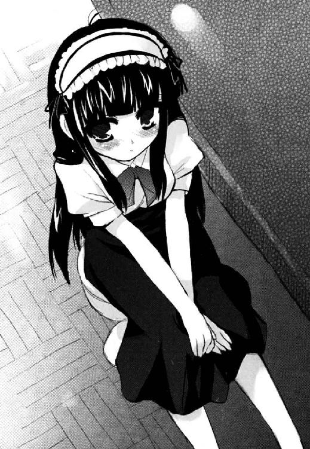

| ROOM NO.1301 しょーとすとーりーず･つー ROOM NO.1301短編集 (富士見ファンタジア文庫) | |
| 新井 輝 & さっち | |
| 富士見書房 (2011) | |
ROOM NO.1301
しょーとすとーりーず・つー
新井 輝

富士見ファンタジア文庫
本作品の全部または一部を無断で複製、転載、配信、送信したり、ホームページ上に転載することを禁止します。また、本作品の内容を無断で改変、改ざん等を行うことも禁止します。
本作品購入時にご承諾いただいた規約により、有償・無償にかかわらず本作品を第三者に譲渡することはできません。
本作品を示すサムネイルなどのイメージ画像は、再ダウンロード時に予告なく変更される場合があります。
本作品は縦書きでレイアウトされています。
また、ご覧になるリーディングシステムにより、表示の差が認められることがあります。
口絵・本文イラスト さっち
そのいち 僕と綾さんと雪辱の痴漢プレイ
「もうムカツク！ ムカツク！」
それは、とある月曜日のことだった。
鍵原ツバメにギロリと睨まれた。健一は彼女である大海千夜子と一緒にいい気分で登校してきたところだというのに、なぜそうなるのか？ そう思って彼女を見るとかなり不機嫌な様子。そうでなくても吊り気味の目と眉が吊り上がりまくっていた。短く固そうな彼女の髪も怒りのせいなのかピンピンとはねているようにも見える。ま、これはただの寝癖かもしれないが......。
とは言えツバメが怒っているのは自分が原因ではないのは健一にはわかっていた。
「で、今日は一体なんなんですか？」
ツバメは何か腹が立つと健一に当たるようなところがあった。本人は否定するだろうが、健一から見ると八つ当たりとしか思えないことが多々ある。まあ、普段から怒らせるようなことをしているのも事実なので......仕方ないところもあることはあるのだが。
ちなみにツバメと健一の関係は、ツバメ曰く、「友達の彼氏」であり友達ではないらしい。その割にはけっこう話しているし、都合のいい話し相手にされている気もしないでもない。
「痴漢よ！ 痴漢！」
「痴漢ですか」
そして健一は思った通り、自分とは本当に関係なかったことを知る。
「昨日、電車に乗ってたら痴漢にあったの！」
ツバメはそこまで言い切ると、急にゾッとした表情を浮かべる。さっきまで真っ赤だった顔がすっと白く変わる。
「はぁ。それは災難だったね」
「そうやって淡々と返されると、すっごいムカつくんだけどっ！」
でも、すぐにまた赤に戻った。まあ、白いままよりは元気そうで良いが、怒りが自分に向いているのは、あんまりよろしくない。
「そんなこと言われてもなあ」
それに、自分はいつもそんな感じだろうと思う。そういう反応が嫌なら自分に話を振らなければいいのにとか考えたらいけないのだろうか？
そんなだからテンションが低いとか怒られるわけだけど、それはもう自分の性格とか性分とか言われるものなので今更、怒られても困る。
「男ってなんだかんだ言っても痴漢を容認する生き物なんだよねえ」
「そうは言ってないだろ？ 痴漢は犯罪だし、良くないって思ってるよ」
「でも私と一緒に怒ったりしないじゃない？」
「それは別に痴漢に限った話じゃないし」
「......それは私がつまらないことで怒り過ぎってこと？ あームカツクっ！」
ツバメはそう言って拳を握って怒りを表現する。健一としてはどう応えたものかわからない。それで見るに見かねたのか、ずっと黙っていた千夜子が口を開いた。
「えっと......おはよう、ツバメ」
しかしそれは痴漢の話ではなく、ただの挨拶だった。そう言えば、挨拶もしてなかったなと気づき、健一もそれに続く。
「おはよう、鍵原」
「......おはよう、千夜子」
それはツバメもそうだったらしく、少し冷静な様子を見せて挨拶を返した。この辺り、さすが付き合いが長いというか、扱いになれているというか、二人は友達なんだなと思わされる。
「千夜子も私が怒り過ぎって思う？」
「うーん。私、痴漢にあったことないからわからないけど、健一さんに怒るのは違うかな」
「......ま、そうだけどさ」
ツバメはでもやり場のない怒りをどうしたらいいんだろうと渋い顔をする。
「って言うか、千夜子？」
「何？」
「その口ぶりからすると千夜子は痴漢にあったことないわけ？」
「うん。そう言ったでしょ？」
「......ま、言ったし聞いてたけど」
ツバメはそれは変だなという顔をする。
「うん。変かな？」
「変じゃない？ 私だって五回くらいあるよ」
「そんなこと言われてもあったことないし」
素直にそう答えた千夜子をツバメはじっと見つめる。顔を見て、その視線は下へと移動する。
「どうよ、それは」
そして急にまた健一の方へツバメは怒りの視線を向ける。
「......何だよ、今度は？」
「おかしいと思わない？」
「それは鍵原より千夜子ちゃんの方が痴漢にあいそうだってこと？」
「そりゃそうでしょ？ 千夜子の方が大人しくて可愛いタイプだし、それに......胸も大きいし」
ツバメはそう言ってまた千夜子の方を見る。
「む、胸は関係ないでしょ、胸は！」
千夜子はそれで顔を赤くして腕で胸を隠す。
「関係なくないよねえ、絹川？」
「まあ、痴漢も触り甲斐のある方がいいと思うんじゃないかなあ」
「それはそうよねえ」
そしてなんだかいやらしい目でツバメは千夜子の方を見る。
「......で、でも胸だけじゃないと思うし」
千夜子は否定しようと思っているようだが、その辺りどうにも歯切れが悪い。恥ずかしさで血が上って頭が回らなくなっているらしい。
千夜子は背が小さくて、大人しげ。いかにも可愛いというタイプだ。なのにこっそり胸が大きかったりするのは本人としても気になるようだ。
「ま、そうだけど、やっぱり千夜子の方が痴漢が喜びそうなキャラよね？」
「俺も痴漢するなら鍵原よりは千夜子ちゃんの方がいいかな。鍵原なんて痴漢されたら、その場で酷い目にあわされそうだし......」
「ぶっ殺すっ！」
健一の言葉にツバメがさっきまでよりさらに大きな声で叫ぶ。すでに来ていたクラスメイトは何事かと振り返ったが、声の主がツバメと気付いて落ち着いたらしく、すぐ元に戻った。クラスメイトたちにとっても、それはツバメが怒ってるのは、まあいつものことくらいの認識らしい。
「そこで怒られてもなあ。自分で千夜子ちゃんの方が痴漢にあいやすいって言ったんだろ？」
「問題は後半の方でしょ？ その場で酷い目にあわされるとかその辺」
「でも、それ言ったら『ぶっ殺す！』とか言ったわけで。そんなに間違ってないってことだろ？」
「まあ、そうなんだけど、絹川に言われるとムカつくってことよ」
言われて健一はまあ面と向かって言われれば怒りもするかと思い直す。
「にしても千夜子はなんで痴漢にあわないわけ？」
ツバメはすっかり自分が痴漢にあったことは忘れてしまっているかのようだった。まあ、話しているうちに別の話になってるのはツバメからするといつものことだが。
「多分、電車とかあまり乗らないからかな」
そんな疑問に千夜子があっさり返答をする。
「......なるほど」
「大体、駅まで行けば用は済むし」
「でも時々は遠くに行ったりするでしょ？ ほら、この間、神宿に行ったって言ってたし」
「そういう時は健一さんも一緒だし」
「......それはそうか」
ツバメは千夜子の返事に納得した様子を見せる。しかしすぐにまた不機嫌そうな顔に。
「つまりそれって私に彼氏がいないのが悪いってこと？」
「そ、そんなことないよ」
千夜子は突然のツバメの怒りに言葉につまる。
でも端から見てると、ツバメの言い分はなんだか的を射ているのかなあと健一は思ってしまった。
「なによ、その目！ 絹川も同意見ってわけ？ ムキ──────────！」
そしてそれに気づいたツバメが怒りの声を上げるのが聞こえた。
○
「ってな、ことがあったんですよ」
──よほど気になっていたのか健一はその日の夜、別の人間にも痴漢の話をした。
その別の人間というのは健一がちょくちょく訪れている不思議な場所の住人たちだ。
十二階建てのビルの十三階。そんなあるはずのない場所に住んでいる一風変わった人間たち。
彼らは１３０１と呼ばれる十三階の一号室に集まり、食卓を囲んで話をするのが日課だった。
今日は全員は揃っておらず、健一と同じく１３０３の住人である有馬冴子、そして通称・管理人である１３０２の八雲刻也がそこにいた。
「痴漢は......私もあったことないわ」
冴子は答えてから、それをなんだか不思議なことだと思ったようだった。
彼女はなんでも『エッチしないと眠れない』ということらしく、健一とはつまり......そういう関係だ。しかもほぼ毎日だったりする。
そして冴子には色々と黒い噂があった。
誰とでも寝る女とか言われてて、健一と知り合う前は実際にもそうだったみたいなことも本人から聞いた。
そんな人間だから色々な男にちょっかいを出されたりする。だから痴漢にあったことがないというのは本人にとっても意外だったのかもしれない。
「......出不精だからかな、やっぱり」
そして冴子はそう結論づけたようだった。言われてみると冴子はいつも部屋にいてじっとしているようなイメージだ。彼女のことを良く知らなかった頃は、青白い肌や長い黒髪から幽霊みたいだなと思ってたりもした。そのイメージの通りだとすれば、、まあ納得できる話だ。
「八雲さんはどうですか？」
それで健一は向かいの席に座っている刻也に尋ねる。彼はそれに驚いた顔を見せた。
「私が痴漢になどあうはずがない」
健一もまさかそんな可能性を聞きたかったわけではない。長身瘦軀で真面目そうな眼鏡をかけたこのクラスメイトが痴漢にあってるとしたら、それは大事件だ。
「いや、そうじゃなくて身近な人で痴漢にあった人とかいませんかってことです」
「あ、ああ、そういうことかね」
刻也は少しずれた眼鏡をかけ直しながら、どうだったかなと記憶を探り始める。
「やっぱり五回も痴漢にあってるって言う鍵原の方が珍しいタイプなんですかねえ」
「いや、そういうわけでもないだろう」
刻也が急に不機嫌そうな態度を見せる。普段は冷淡とすら思える彼が露骨に目に怒りの炎を灯していた。
「......ど、どうしたんですか？」
「別に痴漢などする人間がいるのが許せないというだけだよ。それ以上でもそれ以下でもない」
そう言って刻也が健一を睨む。健一としてはなんだか自分が痴漢をしたようなそんな気持ちにさせられる。
「そ、そう言えば、八雲さんは法学の勉強をしているんでしたっけ......」
なのでちょっと話題をそらしてみる。以前、聞いた話では刻也は司法試験というのを受けるために日夜勉強しているという。司法試験は普通、大学生や大学を卒業した人間が受けるものなのだが、刻也は高校一年生なのにその勉強に躍起になっているらしい。
「まったく。世間では痴漢の罪に対する意識が軽すぎるのではないのだろうか？ 確かに痴漢は強制わいせつまで行かない場合は刑法で裁かれるようなものではないが......」
しかし刻也はそれで弁護士とか裁判官になりたいというわけではないという話だった。なので、そういう怒りというのは彼らしくないという気がしてしまう。彼は法律というものをむしろ憎んでいるのかとすら健一は思っていた。
「彼女さんが痴漢にあったんですか？」
冴子も似たようなことを思っていたらしい。自分の感じた違和感の理由を求めてそんな疑問を口にする。
「......私は別にそのような私怨によって怒っているわけではない」
刻也はそれに歯切れ悪く、否定とも肯定ともとりづらい返事をする。
「ただ、私は痴漢というものがだね」
さらに身を固くし、刻也が続けるが冴子はそれをゆったりと受け止める。
「悪いことですよね、とても」
「そ、そうだ。わかっているならいいのだが」
刻也はそれで自分がまた無用に感情的になっていたことに気づいたようだった。でも冴子はそれを責めるでもなく、健一の方を見る。
「絹川君もわかってるわよね？」
「ええ。もちろん」
健一はそんな冴子の必要以上に追い込まないようにする気遣いというものに感心してしまう。
「しかし、そういうものかもしれないな」
そこに刻也が落ち着いた様子で口を開く。
「え？ 何がですか？」
「いや、理由はわからないがね。痴漢に狙われる人間は何度でも狙われるし、狙われない人間は全く狙われないものかもしれないと思ったのだよ」
「......かもしれないですね」
「正直、鍵原君が痴漢に狙われやすいタイプというのは理解に苦しむが、何か狙われる理由があるのだろうな」
「狙われる理由......鍵原がねえ......」
しかし改めて考えてもよくわからない。ツバメ自身が言うように、ツバメよりはよっぽど千夜子の方が狙われやすそうな感じがする。
「鍵原さんは普段はあんな感じだけど、いざ痴漢にあうと何も言えないタイプな気がする」
そこに冴子が自分の意見を口にする。
「そう、ですかね？」
「それに、これは私の推測でしかないけど、その場で言えなかったから絹川君たちの顔を見て、わーっと言いたくなったんじゃないかな」
「......なるほど」
それは言われてみると納得できる気がした。
要するに自分はツバメにとって文句を言いやすい相手ということなのだろう。そう考えると損な役回りだ。
「うはよ～」
そんなところに眠そうに桑畑綾がやってきた。
１３０４の住人。彼女は弱冠十八歳で世界でも有名な造形家らしいのだが、みすぼらしい白衣を着てふらふらと歩いてくる姿を見るかぎり、そんな凄そうな人にはちっとも見えない。
「もう夜ですよ、綾さん」
健一は綾の時間感覚のなさに気づくとツッコミをいれていた。
「そっかあ。じゃあ、こんばんは～」
綾は半分寝ぼけてるらしいのに訂正する。
「こんばんは」
「こんばんは、綾さん」
「ごきげんよう」
それに他の三人も安心して挨拶を返す。
「......なんか話してたの？」
そして三人の方へと歩いてきた綾がそんなことを尋ねてきた。机にはご飯はのってないので、そうだと推測したらしい。
「ええ。ちょっと」
健一はそれでまあ秘密にするようなことでもないだろうと素直に話すことにする。
「ちょっと痴漢の話を」
「痴漢？」
綾がそれに反応したかと思うと急に動きが止まり、顔面がさあーっと蒼白になった。
「えっと、綾さん？」
その理由を健一が理解する前に......綾は壮大に嘔吐した。
「............」
でも逆に健一たちは凍りついて、しばらく動かなかった。いや、動けなかったのだ。
「すっかり忘れてました。すみません」
十分ぐらい経ったのだろうか。
健一は屋上でフェンスに寄りかかりながら夜風に当たり、自分が大切なことを忘れていたことを思い出していた。
それは綾が昔、痴漢にあったのが原因で吐いたことだ。もうすっかり当人も忘れているものと勝手に思っていたが、実際にはまだまだ心に刺さったトゲとして残っていたらしい。
「健ちゃんが謝るようなことじゃないよ」
隣では、まだまだ元気のない綾が無理して笑っていた。吐き気は治まったらしいが、顔色はまだまだ悪い。なのに笑ってるのは、見ていて辛い。逆に辛い。
綾は確かに造形家としては天才だ。でもその分、色々と欠けているようなところがある。外に出かけることもまともに出来ず、近所のコンビニより遠いところとなると一人では出かけられない。
そんな綾だから痴漢にあって吐いてしまったのだし、それだけ深い心の傷だったのだ。なのに健一はそんなことも忘れて綾にうっかりとまた痴漢のことを思い出させてしまった。
「健ちゃんがね、謝るようなことじゃないよ。悪いのは私だから」
なのに綾は健一を責めない。痴漢の話をした健一が悪いのではなく、そんなことで吐いてしまう自分が悪いと思っているらしい。
「......でも僕が悪いですよ、今回は」
「皆が平気なことなんだもん。私がしっかりしないといけないってだけだよ」
綾はそう言って少し元気が戻ったらしい笑みを浮かべる。
「でも冴ちゃんには迷惑かけちゃったよね」
言われて健一は冴子や刻也が１３０１でまだ後始末をしているのかなと思う。そして最近はこういうことが多いなとも。
冴子はいつだって健一がしてしまったことの尻拭いをしてくれてるような気がした。本人にそのことを言えばきっと、「ただの役割分担でしょ」みたいなことを言うのだろうが。
「......そうですね」
でもやっぱり迷惑をかけたというのは間違いないと思う。本人がそれを不快に思っているかは関係なく、それは事実だろう。
「だから、このままってわけにはいかないと思うんだよね」
そう言って綾は少し健一の側に寄ってきた。
「そうですね」
「で、考えたんだけどね」
「はい」
「健ちゃんが痴漢するってのはどうかな？」
「そうですね」
健一はそう答えてから、綾の提案が無茶苦茶なものであることに気づく。
「......は？」
そして今更のように疑問を口にする。
「健ちゃんが痴漢するのがいいと思うんだ」
「なんで、僕が痴漢しないといけないんですか？ 全然、意味がわからないんですけど......」
と言いながらも健一はなんだかちょっとわかってしまった気がしていた。
「健ちゃんにしてもらうと気持ちいいでしょ？」
「いや、気持ちいいかどうかは綾さんの主観の問題ですから」
「うん。じゃあ気持ちいいのね。だからさ、痴漢の話をして思い出すのが、健ちゃんとのことだったら吐いたりしないで済むと思うんだ」
そう言いながら、綾はへへへと笑う。まだ力がない感じではあったが、なんだか楽しそうだ。
「でも痴漢はまずいんじゃないですか？ 犯罪だし......」
「じゃあ、えっと、痴漢プレイってヤツ？ それに私が望んでやることなんだし犯罪ってことはないと思うんだけどな」
「痴漢プレイですか......」
まあ無理やりというわけではないし、綾が承諾しているのであれば犯罪というわけではないのかもしれない。
「そそ。雪辱の痴漢プレイってヤツだよ」
「いや、そんな言葉ないと思いますけど」
「そうかな？ ま、そうか。とにかくさ、あの時もね、途中で健ちゃんが逃げなければ今日だって吐かなくて済んだと思うんだ」
綾はそう言って以前、吐いてしまった時、健一を部屋に連れ込もうとした話を始める。
「......でも、綾さんとはもうエッチをしないって決めたんです。あれだって無理やりだったし」
「うん。だから本番って言うの？ 最後までしろって言わないから協力してくれないかな」
「その協力ってのが痴漢プレイじゃなければ、僕も責任は感じてますし、いいんですけど」
「......ダメかな？」
そう確認してきた綾の顔はさっきよりもずっと青くなってきていた。健一が拒んでいるせいで、また吐きそうになることを思い出してきたのかもしれない。
「もう少し何か無難な方法はないんですか？」
「とりあえず......胸触る？」
「だから全然、無難じゃないんじゃないかと」
「でも、あの時もそれで随分と良くなったし」
「ま、そうでしたけど」
健一はそんなことを言われたので、どうしても綾の胸に目が行ってしまう。
綾はかなり瘦せているのに胸だけは丸く大きかった。正確なサイズなど知らないが、きっとＦとかＧとかもう少し上とかそんな感じだ。少なくとも胸の大きな健一の姉の蛍子よりは一回り大きい。
なのにパンツ一丁の上に白衣を着ているだけなんて無防備な格好をしている。改めて見ると、すごく危険な映像が飛び込んできてしまう。
「いいよ、触っても」
「......だからですね」
「って言うか、触って欲しいの。そうしないとまた吐いちゃうかもしれないし。それで健ちゃんが凹んで辛そうな顔をするの見たくないし。ね？」
「ね？ って言われてもですね......」
「揉んだり舐めたりしてとか言わないから」
「......言ってるし」
健一はしかしあんまり拒んでもいられないという気もしてきた。なにせ放っておけば本当に吐いてしまいかねない。
「触るだけだから。ね？」
そんな健一の逡巡に気づいたのか綾が駄目押しの言葉を口にする。
「さ、触るだけですよ？」
「うん。触るだけ、触るだけ」
綾はそれでニッコリと笑うと健一の右腕を摑んでそれを自分の白衣の中に引っ張り込む。
「うわっ！」
健一はその素早さに驚くが、すでに彼の手には柔らかい感触が伝わってきていた。それが健一の記憶を揺さぶり、脈拍を上げる。
「でも、揉みたければ揉んでもいいからね？」
しかし綾の言葉ですぐに冷静に戻った。
「......揉みません」
「じゃあ、つまむとか？」
「何をですか......」
「乳首とか？」
「とかじゃなくて......って言うかですね？」
健一は本当に綾はどこまで本気なんだろうと思うが、彼女の顔を見ると文句を言う気も失せる。
「落ち着いたよ。ドキドキもしてるけど」
綾は柔らかな笑顔を浮かべて健一の方を見ていた。血の気も戻ってきてるみたいだった。
「じゃ、じゃあ、とりあえず一安心ですね」
そう言いながら健一もドキドキしてしまうのを感じた。普段はあんまり気にしないようにしてるが綾は美人だし、それに今は胸を触ってる。しかも嬉しそうに笑ってすぐ側にいるのだ。それでドキドキするなと言うのは十五歳の少年である健一にとっては厳しすぎる。
「でも、いつもいつもこうしてもらうってわけにもいかないよね、やっぱり」
「そうですね」
「ってことは痴漢プレイかな、やっぱり」
「......その結論もどうかと思うんですが」
しかし健一もそれしかないのかなあという気がしてきていた。
実際にそれで効果があるのかどうかはわからないが、綾がそれを提案してきたという辺りにそうした方がいいんじゃないかと思わせるものがあった。結局、綾の気分の問題なのだし彼女の望む解決方法しかない気もする。
「その、仮にですけど」
「うん。仮に？」
「仮に痴漢プレイをするとして、どうやってやるんですか？」
健一は痴漢はもちろん痴漢プレイなどしたことはなかった。だからそんなことを聞いてみる。
「やっぱり電車に乗るんじゃないの？」
綾は当然のようにそう答えた。
「で、電車でするんですか？」
「うん。だって痴漢されたのは電車に乗ってる時だったし」
「......ですよね」
健一はやっぱりそれは無理かなあと思う。
でも、他に方法など思いつかなかった。
○
一時間後。二人は埼京線に乗っていた。
埼京線というのは名前の通り埼玉と東京を結ぶ電車である。健一たちが住んでいる比良井からすると東京の反対側を走っていて普段は決して乗らないような路線だった。しかし綾にとってはこれに乗ることに意味があるらしい。
「なんかね、埼京線って痴漢が多いので有名な電車なんだって。混んでる上に駅と駅の間が長いからとかなんとか」
そんなことを言って笑う綾は余所行きの服を着ていた。痴漢プレイのためとは言え、さすがにいつも通りの格好で電車に乗るわけにもいかない。だから上は白いブラウス、下はベージュのタイトスカートといったＯＬみたいな服に着替えてから出かけたのだ。
「......だからって、それに乗る必要はないんじゃないかと」
健一は電車に乗ってた時に痴漢されたと言うなら、その乗ってた電車でするべきなんじゃないかと思うが、もうここまで来てしまった以上、手遅れという気もする。
「まあ、ほら、こういうのは気分だから」
綾が笑う。そうこうしている間に電車は猪毛袋駅に止まり、沢山の人が乗り込んできた。
「うわっととと......」
開いたドアとは逆の方に陣取っていた健一たちは人の壁に押される。
気づくと綾はドアに押し付けられ、健一はその後ろに密着していた。
「......すっごく近くになったね」
綾は顔だけ少し振り向くと健一に微笑む。
「そ、そうですね」
自分の意志ではないとは言え、こんなに綾に接近したのは久しぶりのことだった。健一はその場を離れようと思うが、もちろん電車の中にそんなスペースはない。そして健一が身動きできないでいる間に電車が動き出した。
「と......」
それでまたバランスを崩して健一は綾にもたれるような体勢になってしまう。
「そろそろ始める？」
何かの合図だと勘違いしたのか綾がそんなことを聞いてくる。
「......あのですね」
「でもあんまり遠くまで行くと帰るの大変だし、健ちゃんもそろそろ覚悟決めて始めちゃった方がいいと思うんだよね」
「それはそうかもしれませんけど......」
しかしいざとなるとやっぱり抵抗があった。一度は関係を持った相手とは言え、綾は彼女でもなんでもないし、健一には大海千夜子という彼女がちゃんといるのだ。
「人助けなんだし、ね？」
でも綾はすごく乗り気だった。躊躇している健一の手を摑んで自分の胸まで持っていこうとする。これでは健一が痴漢ではなく、綾の方が痴漢みたいだ。
「わかりました。するならちゃんと自分でしますから......」
そうなってしまうとなんだか本末転倒だなと健一は覚悟を決めることにする。
「うん......やっぱりドキドキするね」
綾が小さな声で呟くのが聞こえた。
「そういうこと言わないでくださいよ」
あんまり意識すると逆にヤバイ。健一はそう思うともう考えるのを止めた。綾に持っていかれた手で彼女の望む通りに胸を揉むことにする。
「行きますよ？」
前にも触ったことがあるはずだが、改めてその大きさに驚く。大きいだけでなく、ずっしりと重い。それに下着をつけているせいか、以前より詰まってるようなそんな感触を受けた。
「......あん」
綾が小さく声を上げるのが聞こえた。
「こ、声出さないでくださいよ」
それで健一は慌てて綾に耳打ちする。
「わかってるつもりだったんだけど......健ちゃんの手がすごく気持ち良くて」
「......というか名前を呼ばないでください」
「ごめん。今度はちゃんと我慢するから」
「頼みますよ、本当」
健一はそれで溜め息をつく。
「あ......それ、気持ちいい......」
しかし綾はそれだけでビクリと反応してしまったようだった。
「綾さん......」
「ん......名前呼ばれると感じちゃうかも」
「えっと......ツッコんだだけですから」
「でも耳元で言われると......感じちゃうの」
「全然、我慢してないように聞こえるんですけど」
「我慢してるよ、すごく。でも、すごく感じるから仕方ないの」
「......そういうこと言わなくて良いですから」
健一はどうしようかと思ってしまう。もっとこっそりとやって綾が満足したらそれで帰れると思っていたが、こんなんではとてもじゃないがそれは無理だろうと思えてくる。
「指嚙んでるとかどうかな？」
綾が小声でそんなことを提案してくる。
「......それでいいなら、そうしてください」
健一はもうかなり自分の頭が麻痺しているのを感じずにはいられなかった。いちいち綾の言うことに反応していたら、本当にいけない気持ちになってしまいそうだった。
それで健一は綾が指を嚙むのを見ると、また胸を揉む。さっきよりはずっと優しく触ったかどうかもわからないような強さで。
「あん」
でもさっきよりも敏感に綾が反応した。
「......綾さん？」
本当に綾は我慢するということができないのだろうかと健一は思うしかない。
「だって気持ちいいんだもん。あ、健ちゃん、離れちゃダメだよ」
「なんでですか？」
「......足がガクガクしちゃってもう立ってられないみたい」
「みたいって......」
一体、どうしてそんなことになってしまっているんだろうと思う。
「なんでかな。自分でだとこんなことないのに」
「......そういうことも言わなくて良いですから」
健一はそれでもう何をしていいやらと思うが、その間にも電車が揺れて、その度に綾は声を上げそうになって必死に指を嚙んでいた。
「ああん。そんなにされたら我慢できないよ、健ちゃん」
「そんなにって......何にもしてませんが。というか名前を呼ぶのは止めてくださいよ」
「でもさっきから胸が揺れてて......あん」
綾は言いかけて、そこまでで口を閉じる。必死に指を嚙んで漏れようとする声を抑える。
「綾さん......もう止めましょう」
そんな様子を見ているともう健一としても続けられる気がしない。
「そんなこと言わないで......続けて」
でも綾は切なげにそんな呟きを漏らす。
「とは言ってもですね」
もう限界だろうと健一は思ってしまう。
「ちゃんと我慢するから......このままじゃ前と同じだよ？ 私、もう......冴ちゃんに迷惑かけたくないし、健ちゃんに何度も助けてもらわないといけないのも嫌なの」
「それはわかりますけど......」
でも、これ以上やったら絶対に綾が大きな声を上げてしまい、結果、見つかる。そうしたら痴漢プレイじゃすまない。
「お願いだよ、健ちゃん。次の駅まででいいから。そうしたら素直に帰るから」
綾は泣きそうな顔を健一に見せる。そう言われてしまうと健一としてももう止めるわけにもいかなかった。
「......約束ですからね」
健一は綾にそう確認したが、本当は自分に対するケジメのようなもののように感じた。
次の駅まで。そう決めることで、自分の中で何かがカチリと音を立ててはまった気がする。
「ん......あん......」
そうなるともう何も怖く感じなかった。まるで他人事のように健一は自分の手が綾の胸に触れてそれを揉んでいるのを感じていた。それは最初は強く、時に優しく。そして全体的に揺らすようにしていたかと思えば、不意に先端へと攻め上ったりもした。
「け、健ちゃん......積極的すぎ......だよう......」
それに綾は息も絶え絶えの様子だった。声を出すのを我慢するので精いっぱいらしい。
「じゃあ止めますか？」
でも健一の手は止まらなかった。自分で不思議なくらい意地悪な気持ちになっている。
「や、止めちゃダメぇ......あと、胸だけじゃなくて他のところも......お願い......」
「他のところってどこですか？」
そんなことを尋ねながら健一の手は下の方へと移動していた。ブラウスの上を滑り、スカートの生地の感触を確かめ、健一の指はさらに下へと降りていく。
「......そ、その辺」
綾が小さく呟くが健一の指はそのまま下がり、綾の太ももをなぞる。
「ここですか？」
「......もうちょい上へ」
「もうちょい上じゃわからないですよ」
声を出すなと釘を刺していた健一は、自分から綾に口を開くようなことを言っていた。
「健ちゃんていつも意地悪だけど......ん......今日は特別意地悪だよね」
「そんなことないと思いますけど。むしろ今日はサービスしてるはずですけど」
そう言いながら健一は綾が望んでいるのとは違うところを触る。下がっていた手は今度は前から後ろへ移動しながら、今度は上へと向かう。
「そこ......じゃないよぉ......」
否定的なことを言いながらも綾は喜んでいるようだった。健一はスカートの上から綾のお尻を触り、綾の反応を見る。
「ああん......らめぇ......そこそれ以上、ダメぇ」
「じゃあ、どこなんですか？」
「どこって......前の方だよぉ」
「前の方ってどこですか？ いつもは平気で言ってるじゃないですか、綾さん」
「あん......い、意地悪しないでぇ。言うから、言うから触ってぇ」
綾がそれで答えを言おうとした時だった。
「この人、痴漢してます！」
急に女性の大きな声が聞こえた。
「............！」
我に返って健一は声の方を振り向いた。それはきっと一瞬の出来事のはずだが、健一にはひどくゆっくりに感じられた。
血の気がす──っと引くのを感じた。頭の方から足の方へと血が降りていく。それとともに頭が冷たくなったように感じられた。
それでも視線は混雑した電車の中をさ迷い、声の主を探す。
「この人、この人です！」
そこにまた女性の声が飛び込んできた。
人込みの中、その女性は手を上げていた。いや、上げさせていたという方が正しい。サラリーマンの手を握ってそれを上へと持ち上げていた。
「............」
健一はその手を摑まれている男がうなだれていく様子をじっと見つめていた。そしてやっと理解する。女性の言う痴漢というのは自分のことではないということを。
「......健ちゃん？」
しかし綾はそんな健一の驚きにはついてこれなかったみたいだった。何が起こったのかわからないのかぼんやりとこっちを見ていた。
「本物の痴漢がいたみたいです」
そして健一がそう答えた時、電車は伊田橋駅に到着したようだった。
○
「今日は楽しかったね、健ちゃん」
比良井駅から歩きながら幽霊マンションへと向かう途中、綾は本当にご機嫌の様子だった。
「僕はドキドキでした」
しかし健一は素直に楽しんでもいられない。
あの痴漢にあっていた女性の声を聞いて、血の気が引いたのを思い出すと、本当に危ういところだったと思う。いや、もちろん、合意の上だったし、痴漢をしていたというわけじゃないのだが、それにしたってやっぱり電車の中であんなことをするなんてどうかしてた。
「楽しくなかったの？」
健一の態度に綾は少し前に出て覗き込むようにして尋ねてくる。
「......楽しくはなかった気がします」
「そうかなあ。健ちゃんも途中からはけっこう楽しんでたと思うんだけどな」
綾はでも今はそうじゃないらしいということを確認して不思議そうな顔をする。
「意地悪なことを言う健ちゃんに私、すっごくゾクゾクしちゃったんだけどな」
「......それはどうも」
「私、イッちゃったみたい、あの時」
綾はそんなことを言って嬉しそうに笑う。
「綾さん？」
「久しぶりだからちょっと自信ないけど、あれってきっとそうだと思うんだ」
「......そうなんですか」
綾は本当に楽しそうだなあと健一は思う。自分はもう社会的に終わったかと思って生きた心地がしなかったのに、綾はその頃、夢心地だったということらしい。
「私はすごく楽しかったよ」
元気のない健一に綾は改めてそう告げる。
「みたいですね」
「だから、健ちゃんにももう少しくらい喜んで欲しいな」
「でもまあ、さすがにちょっと......びっくりしすぎました」
思い出すだけでゾッとする。あの女性の持ち上げていた手が自分だったら、今ごろ、どうなっていたことか。
「大丈夫だよ。だって、私が頼んでしてもらってたことだし。ま、怒られはするかもしれないけど」
「......そうかもしれませんけど」
「それに、きっともう大丈夫だって気がするんだ」
「......何がですか？」
「痴漢の話されても、もう気持ち悪くないよ」
綾がそう言って笑った時、健一は自分がまた大事なことを忘れていたのに気づかされた。
「......そういう話でしたよね」
「うん。これからはね、痴漢の話されたら、今日のことを思い出すと思うんだ。健ちゃんに意地悪なことされて、でも感じちゃったこととか」
そんなことを綾は屈託なく笑いながら話す。
「......改めて言われると照れますよ」
「うん。だからさ、健ちゃんにも笑って欲しいんだよね。気持ち悪いってことはないけど、申し訳ないって思っちゃうから。痴漢って言われるたびにさ、また健ちゃんに迷惑かけちゃったんだなって思うのも健ちゃんは好きじゃないでしょ？」
「ですね」
そんなことを言われたら、もう笑うしかないと健一は思う。そりゃまあ、本当にびっくりしたし、色々とドキドキさせられたが。
「だからさ、楽しい思い出ってことにしようよ」
「わかりました。そうします」
そして健一は本当に綾は不思議だなと思う。世間知らずで常識もなくて、すごく打たれ弱いのに、でも健一が凹んでいると元気にしてくれる。
自分の興味のあることしか知らないけど、綾はそのことに関しては自信を持って生きてるようにも感じられる。
「今日は楽しかったです」
だから健一はそう答えて笑った。それを見て綾はゆったりとした笑みを浮かべる。えへへ、と。
「私はすっごく楽しかったよ。それにとっても気持ち良かった。だから、いい日だったなって何度も何度も思い出すよ、きっと」
「......僕も思い出しますよ、きっと」
それはちょっと千夜子に対しては申し訳ないことではあったけど。
「そういう時って、健ちゃんもエッチな気持ちになるの？」
なのに綾はまたそんな妙なことを尋ねてくる。
「......あの、ですね？」
「え？ 違うの？ 私、思い出したら一人でしちゃうと思うんだけどなあ」
「......そういうことは言わないでください」
「そういうもの？」
「そういうものです」
「そっかあ......じゃあ、こっそりするね」
でも綾はやっぱり自分の考えに忠実だ。
「じゃあ、そうしてください」
なので健一はそれを否定するようなことはせず、ただ苦笑いを浮かべる。
「じゃあさ、帰って続きをしようか？」
綾はそう言って健一に腕を絡ませてくる。そしてそのまま引っ張るようにして駆け出す。
「え？ ちょっと......綾さん？」
綾の発言、そして行動に健一は戸惑いながら、それでも綾を追いかけるように走る。
「私ばっかりじゃ悪いよね、やっぱり」
綾は健一に顔を近づけて小声で呟く。
「......それはそうかもしれませんけど」
「健ちゃんにも気持ち良くなって欲しいんだ」
「その気持ちもわかりますけど」
でも実際に行動に出られても困ってしまう。自分と綾は恋人同士というわけでもないのだし。
「じゃ、気持ちを汲んでくれると嬉しいな」
でも今の綾には何を言っても無駄そうだった。こうなってしまうともう健一の言葉は届かない。
「......有馬さんたち、起きてるかな」
だから健一は幽霊マンションの住人たちに一縷の望みを託す。第三者の意見なら綾も耳を貸す......かもしれない。
「ん？ 冴ちゃんがどうかしたの？」
「......いや、誰か反対してくれないとピンチだなあって」
「冴ちゃんは反対なんかしないよ、きっと」
綾はそう言って自信あり気に笑う。
「......ですかね」
そして健一はそう言えばと思い出す。あれも綾が痴漢にあった日のことだ。健一を綾が部屋に連れ込もうとした時、冴子が通りかかったが彼女は綾を止めてはくれなかった。むしろ綾の行動を奨励するようなことを言ったのだ。
「......うぅ」
健一は自分がいつのまにか危険な状況に陥っているのを知る。
「管理人さんは反対するかもしれないけど......きっともう寝てるか、部屋で勉強してるよね」
「ですよね」
そして最後の希望も断たれたことを健一は認めるしかなかった。
「お礼をしたいだけだよ」
それでがっくりとした健一に綾はぎゅっと腕を抱いて微笑みかける。
「そのお礼ってのが問題なんです」
「でも気持ち良くなりたいでしょ、健ちゃんも？」
「その方法が問題なんです」
「もう痴漢プレイは嫌？」
「あんまり気が乗りません......」
「じゃあ、他のプレイにしようか？ あ、そうだ、この間しそこねた、レースクイーンの格好してってのはどうかな？」
「だから、それはもう金輪際忘れてください。僕は別にレースクイーンは好きじゃないですし」
「えー！ 健ちゃん、絶対、レースクイーン好きなはずだよお」
「......だから、なんの根拠があってそんなことを言うんですか？」
健一は反論しながらも、もうダメかもしれないと思えてくる。
「健ちゃん、足が長い女の人、好きでしょ？」
「......だとしてなんなんですか？」
そもそもそうかどうかも自分ではよくわからない。ただ傍から見ててそう思える根拠というのがあるのなら否定できない気もする。
「だからさ、足が見える格好って好きなんだと思うんだよねー」
「そうなんですかねえ......」
「スカートだったらフレアスカートより、タイトスカートの方が好きでしょ？」
「そうかなあ......」
言われて考えてみるが、そもそもスカートの種類なんて良く知らない。
「そうだよ、絶対そうだって。だから今日はレースクイーンプレイにしよ、ね？」
「ね？ とかそういうレベルの話じゃあないですから、それは明らかにっ！」
「え──！ なんで？」
しかしそうこうしている間に、幽霊マンションが見えてきてしまう。
だから、せめてまだ夜空が見えてるうちに星に願おうと思う。
八雲さんが僕たちが帰ってきたのに気づいてくれますように──と。
※痴漢は犯罪です。絶対に止めましょう。
おしまい
そのに 僕と綾さんと身代わりの暗闇プレイ
有馬さんはシャワーを浴びている。
健一はまだ乾いていない髪を気にしながらソファに座り、そんなことを想像した。
ここまで音はしない。でも、わかる。さっきまでは自分がシャワーを浴びてたし、入れ代わりに冴子がお風呂場へと入ったのだ。
でもそれがどんな光景かと想像するのは困難だった。昨晩に限らず、冴子とは何度となく体を重ねてきた。なのに彼女の裸体を想像することが健一には出来ない。
改めて考えると実に不思議なことだが、健一は冴子の裸を一度も見たことが無かった。冴子と体を重ねる時はいつも部屋が暗いからだ。豆電球一つつけない。カーテンも閉め切って月明かりさえない。そうでなければ彼女は服を脱がない。その辺は本当に徹底している。
「もう何回したかもわからないくらいなのに」
健一はそれで本当に何回したんだろうと考えてしまった。大体三回ずつとして三か月で──。
「三百回くらいかな？」
改めて考えるととんでもない数だった。チリも積もればなんとやらだが、それ以前にさすがに毎日のようにしすぎな気がする。
冴子はなんでもエッチをしないと眠れないらしい。にわかには信じられない話だが、それはどうやら事実らしく、そのせいで眠れずフラフラになっているところは見たことがある。だからそうならないようにということで、冴子とエッチをしている......はずなのだが、どうもそうとは言い難い回数になってしまっている。
「......さすがにまずいな、これは」
その数が誰にわかるということもないだろうが、その事実に健一は危機感を覚える。というか冴子は健一の彼女でもなんでもなくて、健一には大海千夜子という立派な彼女がいるのだ。でもその彼女とはエッチをしたことはなくて、もっと言うとキスだってしたことがない。手をつなぐのも彼女に言われてだったし、腕を組むのもそうだった。なのに冴子とは彼女に求められている気がして、毎日のように......してしまっているのだ。
「どうしたの？」
冴子の声がして、健一は我に返る。悩んでいるうちに体を洗い終えて戻ってきたらしい。
「え？ えっと......」
しかし尋ねられたところで、素直に答えられるような性質の問題でもなかった。
「エッチなこと......考えてた？」
それが顔に出たのか冴子が追及するかのように質問を重ねてくる。
「いや、その、エッチのことを考えてたのは事実ですけど、エッチなことを考えたわけじゃなくて......」
そのせいで健一は焦って自分でもなんだかわからない言い訳をしてしまう。
「絹川君って本当にエッチなのね」
「だから、エッチなことを考えてたんじゃないんです」
「でもエッチのことを考えてたんでしょ？」
そう言いながら、でも冴子は怒っているわけではなさそうだった。タオルで髪を拭きながら優しい笑みを浮かべ健一の横に座る。
「......はい。でもその具体的な話じゃなくて、その回数のことを考えてたんです」
「回数って......エッチの回数？」
「......はい」
改めて指摘されると本当に我ながらバカなことを考えていたなという気持ちになる。でも冴子はそれを笑ったりはしなかった。
「昨日が......四回だったから、三百四回かな」
どころか真顔でそんなことを言い始める。それに健一は驚かずにはいられない。
「えっと......数えてたんですか？」
「え？ あ、その......覚えている範囲の話だから。別に毎回数えているわけじゃないし......」
冴子は自分の言ったことがかなり恥ずかしいことだと気付いたのか真っ赤な顔をしてうつむく。
「じゃあ、それ以上してたってことですか？」
覚えている限りで三百四回ってことは......一体、本当は何回したんだろう......。そう思うとさっきよりもずっと自分のしてきたことが実感を伴ってくるのを感じる。
「......そうなるかな」
それは冴子の方もそうらしく、冴子は視線を逸らして立ち上がる。
「そろそろ朝ご飯の時間だから......１３０１に行かないと......」
そして、それだけ告げると健一の返事を待たずに、足早に歩き始めた。
１３０１。そこはこの『幽霊マンション』の本来は無いはずの十三階に住む者たちが集う場所だ。最近の健一はそこで朝ご飯を食べるのがすっかり日課になっていた。
でも、いつもそうしているからと言って、いつも通りになるとは限らない。それを健一は思い知る。
「私、二晩ほど外泊することになります」
それを言い出した冴子はさっきまでとは別人のようだった。実際、同じ人物の発言とはとても思えない。さっきまで同じ部屋にいて、昨晩もずっと一緒にいたというのに、健一は初めてその話を聞いたのだ。耳を疑うしかない。
しかもその時、１３０１には四人の人間がいた。健一と冴子と他に二人。それから察するに部屋で二人きりの時に話すよりも皆の前で話す方が楽ということなのだろうか？ それも変な話だ。
「いつからかね？」
しかし通称とはいえ管理人さんと呼ばれる刻也はその辺り、かなり冷静だった。冴子がハッキリと言わなかった部分を的確に尋ねる。
「今晩からです」
冴子は事実だけを答える。なんだか彼女には似つかわしくない事務的な態度だった。外での冴子らしいと言えばそうだが、やはり健一は別人のようだなと感じてしまう。
「今晩からかね......うむ」
刻也はその答えにそう呟き、今度は健一の方を見て尋ねてきた。
「絹川君。君も一緒なのかね？」
予想外の質問だった。
「え？ そういうわけじゃないですけど」
「そうか」
健一の返事に刻也は小さくうなずく。
「......一緒の方がいいんですか？」
健一は質問の意味がわからず、あれこれと考えてしまう。刻也は冴子の特別な事情は知らないはずだ。しかし知らないなら、なぜそんなことを尋ねたのだろう？
「あ。いや、そうではないんだ。単に有馬君も絹川君もいないとなると食事は私が作らねばならないのかなというだけだよ」
しかし刻也の考えはそんなに難しいことではなかった。むしろ考えすぎていたらしい。
「ああ。そういうことですか。僕はいますから、食事はちゃんと僕が作りますよ」
「そうか。なら私としては有馬君を引き止める理由はない」
刻也は納得した様子で冴子にそう告げる。しかしそれを聞いて健一は、でも大丈夫なのかなと不安になった。それはもちろん食事のことではなく冴子のことだ。
誰かとエッチしないと眠れない。そんな冴子が外泊などして大丈夫なのだろうか？ どこかに出かけるとなるとかなり体力を消耗するだろうし、それで二晩寝れないのだから冴子にとってはそうとうキツい状況になるはずだ。
「大丈夫だから」
そんな健一に向かって冴子が呟いたのが聞こえた。驚いてそっちを見ると、笑うことなく静かな表情を湛えた冴子がそこにいた。
「大丈夫ならいいんですけど」
そしてその顔の冴子に言われてしまうと健一としてはもう踏み込めない。だから表向きは納得したことにする。
「綾さんはどうですか？」
そしてそんな空気の中でさっきから眠そうな顔をしたままの綾に刻也が尋ねる。
「私は......大丈夫かな。冴ちゃんがいなくても健ちゃんがいてくれるなら、うん」
綾はあまり真剣ではない様子でそう答える。眠そうなだけではなく、実際に眠いらしい。
「では、残るは絹川君だけだな」
刻也はそう言ったが、もう健一の答えは決まっている。
「僕は大丈夫です」
本当はそうかどうかなんてわからないがそう答えるしかないのだ。
「じゃあ、すみませんけど、そういうことで」
冴子は確認を終えると何も無かったかのように食事に戻る。そんな様子を見ていた健一の心の中にまた疑問が浮かぶ。
本当に大丈夫なのかな？──と。
その大丈夫がどういう意味なのか自分でもよくわからなかった。
それに冴子はどこに泊まるつもりなんだろう？ という新たな疑問も浮かぶ。でもそんなことは考えてはいけないことだと健一にはわかっていた。
冴子は別に自分の彼女でも何でもないのだ。体を重ねるのだって、そうしなければ彼女が眠れないから。それだけの話なのだ。健一にとってはそれは素直に納得できることではなかったが、でもそれだけのことでないとなったら、冴子は出ていくしかないと言っていた。
だから心配をしてはいけない。たとえ、誰か別の男のところに泊まるという意味であっても......それを止めてはいけないのだ。それが冴子が引いた健一との境界線なのだから。
○
その日、学校から帰ってくると、もう冴子は出かけてしまった後だった。
「......挨拶くらいはしたかったな」
朝食の後もろくに話ができなかった。あの別人のようになった冴子には話しかけてはいけない。そのことが経験的にわかっていたからだ。
そのこと自体はいつもの通り。寂しいけれど、いつも通りだ。でも二日もここを離れるということは初めてのことだ。夏休みに健一の方が二晩、外泊をしたことはあった。その時は冴子はここでずっとじっとしていたらしい。
でも今回はそうではない。どこかに出かけてそこに二晩も泊まるのだ。あの誰かとエッチをしなければ寝ることの出来ないという冴子が。
「でも......俺と有馬さんは、それだけの関係なんだよな......」
誰もいない１３０３にいると冴子がここに来た時のことや、やはり出ていくと言った時のことが思い出された。健一にこれ以上迷惑をかけたくないと言った冴子。そして、自分のことを絶対に好きにならないでくれと言った冴子。その時の冴子は真剣で、そして悲しげだった。
たとえ体を何度重ねても、それはただの日課であり、それを理由に冴子に特別な思いを抱いてはいけない。それは理解している。だから、いきなり外泊すると言われても気にしてもいけないはずなのだ。
でもそれはやはり理屈でしかないと思う。感情はこの現状を寂しいと訴えてくる。
「たった二晩のことのはずなのにな」
健一はそう呟いて、それが自分にとって、全然、『たった』なんかではないことを強く感じる。感じてしまう。
今晩、冴子と会えない。それだけのことで自分の心がこんなにも締めつけられるなんて健一は想像もしたことがなかったと思う。
「彼女でも何でもない──そのはずなのに」
でもいくら理由を増やしても、感情はさっきと同じ結論しか出してはくれなかった。
そんな気持ちのまま１３０１へとやってきた健一を待っていたのは、綾だった。
「......あれ、どうしたの？」
さすがにもう眠くはないらしい。健一とは対照的な明るい笑顔がそこにはあった。
「いや、有馬さんはもう出かけちゃったみたいだったんで......挨拶くらいはしたかったなあって思ってただけです」
そうは言ってみるが、やっぱりそれだけということはない。それが理由で今、自分は明らかに落ち込んでいる。
「大丈夫だよ」
でも綾はそれにニッコリと笑う。
「......大丈夫ですかね」
「うん。冴ちゃんは大丈夫だよ。ちゃんと約束を守る子だもん。冴ちゃんが大丈夫って言った以上、心配する方が失礼って言うのかな。多分、そういうことなんだと思う」
「ですね」
その理屈はわからないが、綾の言葉には不思議な説得力があった。単に彼女の元気のある言葉が健一にエネルギーを与えてくれているというだけのことかもしれないが。
「それでさ、健ちゃん」
そして綾の心配はそこで終わったらしい。
「......なんですか？」
「今晩は夕食はなに？」
「えっと......なんでしたっけ？ ここのところ、有馬さん任せっぽい時が多かったから、その分も頑張らないとですよね」
「ま、そんなに頑張るようなことでもないけど。健ちゃんは普通に作っても美味しいし」
「ま......そうかもしれませんけど。綾さん、何か食べたいものとかあります？」
「食べたいもの？ うーんとね......ラーメンかなあ。ほら、あのお母さんのラーメン」
綾は自分の母親が昔作ってくれたというラーメンの話題を口にする。最近、それを健一が再現したことで、どうやら綾のお気に入りのメニューになったらしい。
「それは綾さんの担当だと思いますけど。作り方を教えるのはいいですけど、食べたいから作ってというのはどうかなって思います」
「あ、そうか。じゃあ......明日、チャレンジしてみるよ」
「それは明日の晩は綾さんが作ってくれるってことですか？」
「うん。今晩はちょっと自信がないから明日ね」
「その辺りはよくわからないけど、楽しみにしておきます」
「うん。まあ、ただのラーメンだけどね」
「ま、それ言っちゃうとそうですけど。綾さんの手料理ってことになると、ちょっとしたイベントかな、と。で、とりあえず今晩はどうします？」
「うーん。まあ、なんでもいいや」
「何でもいいってのも困っちゃうんですけど」
「うーん。でも、ラーメン以外は思いつかないし、健ちゃんの作るものならなんでも美味しいから、なんでもいいかなって」
「......そういうことならいいですけど」
健一は少し照れるのを感じながら部屋の奥のキッチンにある冷蔵庫の方へと歩く。そこに刻也が用意してくれた献立表が貼ってある。
「今日は予定だと唐揚げみたいですね」
それを読み上げて健一は綾の反応を確認する。
「やたっ！ 健ちゃんの作る唐揚げって美味しいんだよね」
綾は予想以上に喜んでいるみたいだ。
「さっきはなんでもいいって言ったような」
「だから健ちゃんの作るものなら何でも美味しいからって言ったと思うけどな。しかもそれが唐揚げだったら美味しいこと確定なわけで、それを喜ぶってそんなに変？」
「......いや、全然、変じゃないですよね」
そして自分の言い分が変なのかなと感じる。それから健一はいつのまにかまた自分の心が随分と変化しているのを感じる。綾と話してるうちに心はもう寂しいと訴えるのをやめていた。
「薄情なヤツだな、俺って」
そして健一は一人呟いて、でもそれでいいんだと思うことにした。冴子がそれを望んでいたのだからと自分に言い訳をしながら。
○
しかし次の日、朝起きるとやはり冴子がいないということを思い出すことになる。寝る前は必死にそれを忘れようとしてたのに、やはり無理だったらしい。そして情けないことにそれは心がではなく、体の方からの訴えによってだった。
「......ここんところ毎日だったからな」
どんなことでも慣れるのだろうかと健一は思う。毎日、毎日、冴子と体を重ねていたせいで、体はそれを当然のことのように受け止めるようになっていたらしい。
だから体は不満を訴えてくる。なぜいつもの通りにしなかったのか？ と尋ねてくるのだ。
「そんなの......有馬さんがいないからだろ」
そして健一は自分にとって冴子がどういう存在なのか改めて考えてしまった。
「ごきげんよう、絹川君」
そんなモヤモヤした健一とは対照的に、すっきりとした人間が１３０１で待ち受けていた。彼の名は八雲刻也。学校が休みの土曜日の朝だというのに、いつも通りきっちりとした服装をして決まった時間に起きて生活をしているらしい。
「おはようございます、八雲さん」
「......何かあったのかね？」
そして健一の様子は傍から見てもちょっとおかしかったらしい。
「いや、何もないです。だから変なのかもしれません」
「......ふむ。それは有馬君がいないせいかね」
「そうですね。有馬さんはここに来てからはずっといましたから」
「それはそうだが......別に彼女は君の彼女とか恋人というわけではないのだろう？」
「まあ、そうなんですけどね」
健一は刻也の言葉にそう答えながら、なんだからしからぬ話題だなと感じる。
「うむ？ 今度はどうしたのかね？」
「いや、八雲さんとそういう話をしたことってなかったような気がして。八雲さんって彼女とかの話を避けてるみたいなところがあるし」
「......まあ、そうだな。少々、品のない話だったかもしれない」
「いや、ま、僕が品のないこと考えたせいですし、八雲さんが悪いってわけじゃないですよ」
「そうかもしれないが......むぅ」
刻也は言葉に詰まってしまったらしい。
「......えっと、今晩は綾さんがご飯を作ってくれるそうです」
だから健一も話題がなく、そのことを思い出したように刻也に告げる。
「綾さんが料理をするのかね？」
「みたいですね。前からちょっと作る気にはなってたみたいですけど、有馬さんがいないから、それでやる気になったんですかね」
「......ふむ。それは楽しみだと言いたいところなのだが」
「やっぱり不安ですか？」
「いや、今晩はバイトでね、夕ご飯の時間には戻ってこれそうにないのだ」
「あ、そういうことですか」
健一は刻也のバイトのシフトについて完全に把握しているわけじゃないが、そういう日が時々あるのは知っていた。きっと本当なのだろう。
「冷めても大丈夫なものなら、残して置いてくれれば後で食べるのだがね」
「いや、それがラーメンなんですよ」
「......そうか。残念だよ。せっかくやる気になってくれたのに食べることができないなんてね」
刻也のそんな言葉に噓はないようだった。
「じゃあ、そう言ってたと伝えておきます」
「起きてきたのなら自分で言うが、そうでない場合は申し訳ないが伝えておいてくれると助かる」
「はい。わかりました」
そしてどこまでも真面目そうな対応の刻也に健一はちょっとホッとした気分になるのを感じた。
昼頃になっても綾は１３０１に顔を見せなかった。どうやら寝ているらしい。綾はずっと起きている時もあるが、ずっと寝ている時もある。明らかに他の人間とはサイクルというか時間の流れが違うらしい。
そしてそんな綾を待っている間に、刻也はバイトに出かけてしまい、健一はすることもないので街に出ることにした。
「千夜子ちゃんは今日は用があるらしいし......一人だと特にすることもないよなあ」
街を歩きながら健一は彼女である千夜子のことを思い出す。この土日は会えそうにないという意味では冴子と一緒の状況なのに、随分と気にしていなかった。それに改めて驚く。
「問題だよなあ、これはこれで」
しかし問題なのは言うまでもなく自分だ。
まあ千夜子とはちゃんと話してたし、ちゃんと会えないことを納得して別れの挨拶をしたというのは事実。でも、状況を考えるに自分は千夜子よりも冴子と付き合ってるかのようだ。もちろん、そんな事実はないのだが......。
「あら、健一君じゃない」
そこに不意に健一の名を呼ぶ声が聞こえた。大人の女性の、妙に嬉しそうな声色。声の主を探すとニッコリと笑顔を浮かべる知った顔がそこにあった。
「......錦織さん」
その女性は錦織エリ。綾のプロデューサーという女性で、一度、彼女に連れられて事務所に行ったことがあるが......それはあんまりいい思い出とは言えない。綾から健一との関係を聞いていたらしい彼女に押し倒されて、そのまま襲われてしまったのだ。
エリはプロデューサーなんて仕事をしているが、まだまだ若いし、ハーフらしく日本人離れした美貌の持ち主だが......やっぱり騙されて連れ込まれた揚げ句の行為......というのは色々な意味でどうかと思ってしまう。
「嫌ねえ。そんなに警戒することないじゃない」
そんなことを考えているのを察したらしく、エリは困ったような表情を浮かべた。
「......あ、いや、その」
「でも、まあ、自業自得か。そう思われるだけのことはしたわけだしね」
エリは自分で言い出しておいて、そう一人で納得したらしい。そういうところは本当に頭の回転が速い。健一の返事を待たず、さらに次の話題に進むつもりらしく、また口を開く。
「で、その、健一君、今、暇ある？」
「......まあ、暇はありますけど」
「だから警戒しないでいいわよ？ 今日はそういうつもりじゃないから」
「じゃあ、なんなんですか？」
「せっかく会ったんだからお話でもどうかしら？ もちろん、私の事務所とかではなく、その辺の喫茶店で。それなら安心でしょ？」
「それならいいです」
正直、なんで会ったら話をするのかはわからなかったが、特に断る理由もないかなと思う。
「じゃ、あの店にしましょうか？」
そしてエリは適当に店を選ぶと健一の手を摑んで歩き出した。
「......は、はい」
やはり強引な人だなと健一は思った。
「すごい空いてますね」
正直、心配になるくらい客がいなかった。昼過ぎという時間帯が喫茶店にとってどういう時間帯なのかはわからないが、他に客がいないとなると大丈夫なのかなという気持ちにもなる。
「ま、こんなもんじゃないかしら」
でもエリは特に疑問を持っていないらしい。早速出てきたアイスコーヒーを飲みながら、そんな感想を漏らす。
「そういうものですかね？」
「まあ、特に美味しいというわけでもないし、店内も普通だもの」
こういう意見はエリが言うと説得力があった。詳しくは知らないが綾の作品以外にも色々なものを売り出しているらしい。そういう人間が言うのだから間違いないという気持ちにさせられる。
「それはそうですけど」
「お店側も客が来ないのを前提で待ちかまえてるわけだし、いいんじゃないの？」
言われて見渡すと店長らしき人が一人いるだけで他に店員の姿はない。
「......なるほど」
なので素直に納得してしまう。
「というのが、噓という可能性を考えてみるというのはどうかしら？」
なのにそれをひっくり返すようなことをエリが言い始めた。
「ど、どういう意味ですか？」
「確かに私の言ったことは筋が通ってるわよね。でもそれも全部私の書いた筋書きって可能性もあるんじゃないかってこと」
「それはその......」
言われて健一は激しく不安がもたげてくるのを感じた。
「この喫茶店を選んだのは私だってのは覚えてる？ 私はそもそも健一君をここに連れ込むつもりだった......かもしれないわよね」
そんなことを言うエリの後ろの方で店長らしい人が奥へと引っ込むのが見えた。
「......えっと、マジですか？」
それで心の中の不安が大きくなる。
「私はなんであんなところにいたのかしら？ 健一君に会うために待ち受けていたとしたら、ここの流行ってない店に私が手を回していたとは......考えられない？」
エリが怪しい笑みを浮かべ尋ねてきた。
「......考えられます」
だから健一の心は不安でいっぱいになった。そしてどうして自分はこういう状況になるまでそれに気付かないのだろうと思ってしまう。
「あははは」
でもエリは突然笑い出す。
「......あの？」
「そんなの冗談に決まってるでしょ？」
「そうなんですか？」
しかしそう言われた後でも、やっぱり冗談じゃないんじゃないかという思いが残る。
「だって健一君に会えるかどうかはわからないでしょ？」
「いや、錦織さんならそこまで計算して......とかやりかねない気も......」
「あら......そうなの？ でもさすがに無理」
エリはそれでニッコリと笑うと、さっそく別の話を始める。
「今日は有馬さんのところでお昼をいただいて来たのよ。健一君に会ったのは本当に偶然」
「あ、そうなんですか」
エリの言う有馬さんというのは、冴子の父、有馬十三のことらしい。
「でも健一君がそのつもりなら、私が企んでたってことでもいいわよ？」
「......いや、そのつもりじゃないですから」
「あら......この間は気持ちよくなかった？」
「気持ちよかったですけど......って、何を言わせるんですか！ 何を？」
「え？ けっこうサービスしたつもりなのに、もう求めてくれないってのも寂しいなあと思って」
言われて健一はちょっと思い出してしまう。
「......いやま、それはそうですけど」
「健一君は綾とはあれっきりなんでしょ？ ってことはそんなにアレコレ経験しているわけじゃあないと思ってたんだけど......そうでもないのかしらね？」
疑問形で口にしながらもエリの視線がその答えを求めて健一の顔やら体を探るように動く。
「......えっと」
「胸でされたのは初めてだったでしょ？」
エリはにっと笑うと、とんでもないことを口にした。
「......えっと」
「どうやら正解みたいね」
「わかるんですか？」
「わかるわよ。あの時のことを思い出して、今の健一君の顔を見れば」
「......うぐ」
エリの言葉はハッタリかもしれない。でも指摘自体は正しいので困ってしまう。
「あとはそうねえ......」
「聞かないでくださいっ！」
だから健一はエリの言葉を止めるしかない。
「......ま、男の子の経験をあんまり追及するのも良くないわよね」
「そういうことにしておいてください」
本当に心からそう思う。それにこんな話をしていると、まだしたことの無いことにチャレンジさせられそうだ......それは避けたい。
「でも、今日の健一君は顔に『すごくしたい』って書いてあるわよ」
「うえっ!?」
エリの指摘に顔が引きつる。それはエリの言葉だからと言うのもあるが、それなりに心当たりがあるからだ。
「ね、健一君？」
そんな健一にエリは優しく尋ねる。
「は、はい」
「綾としたら？」
「えっと......」
「私とはその気がないなら、もう無理にしろとは言わないけど......綾とは最初にしたきりなんでしょ？」
「そうですね......」
「あの娘、あなたのせいで目覚めちゃって持て余しているみたいなのよねえ」
エリは笑いながらそう言うので、どこまで本気かはわからない。
「......そんなこと言われても」
「まあ、無理にとは言わないけど、綾としてあげてもバチは当たらないと思うわよ。私はそうなってくれた方が嬉しいし、綾もそれを望んでいる。それに原因は健一君なんだからね？ その辺はちゃんと考慮して欲しいかな」
「......うーん」
でも、だからって、それはどうなのかなと思ってしまう。そりゃ一度は関係を持ってしまった相手だが、でもそれを理由にずるずると続けるというのはいけないことだと感じる。
「綾のこと嫌いなの？」
「嫌いじゃないです。むしろ好きですよ」
それは本心からのことだと思う。
「じゃあ真剣に検討してくれる？ ちなみに知ってると思うけど、綾はあなたのこと大好きよ」
エリは不敵とも見える笑みを浮かべて、ハッキリと健一にそう告げた。
○
「......それはわかってるんだけどなあ」
夜になってもエリに言われたことが頭の中で繰り返されていた。だから健一は思わずそれに言い訳めいたことを呟いてしまう。相当、心に深く刻み込まれてしまったらしい。
綾はあなたのこと大好きよ──エリのその言葉が噓だなんて思えなかった。実際、綾本人からもそうだというオーラがビシビシと伝わってくる。そこに人づてで補完されてしまうと、もう気になってしまってしょうがない。
「どうしたの、健ちゃん？」
そして我に返ると、すぐ目の前に綾がいた。しかも買い物袋を抱えて。どうやら頑張って買い物から帰ってきたらしい。
「......あ、いや、その」
そしてよそ行きの格好の綾を見て、健一はうまく返事が出来ない自分を意識してしまう。
「待ってる間にお腹空いちゃった？」
でも綾は今は料理のことで頭がいっぱいらしい。まあ、ほとんどしない料理をするとなれば意識もそっちに向かうだろう。
「そんなにでもないですけど......確かにお腹は空いてるかもしれません」
「じゃあ、早速作ろうか。基本的には私が作るから、健ちゃんは隣で間違ったらツッコんでくれるかな？ それくらいはいいよね？」
「あ、はい。もちろん」
そして綾が本当に真剣に料理に取り組む気らしいことを感じて、健一はちょっと不謹慎だったななんて思った。
「どうかな？」
出来上がったラーメンを挟んで健一は綾と向かいあっていた。食卓に綾が作った料理が並んでいるというのは、なんとも不思議な光景だ。
「......美味しいですよ」
でもそれは現実のものだ。口に入れた麵から広がる味がこれが夢とかではないと教えてくれる。
「本当？」
「初めてとは思えないくらい上手です」
「健ちゃんも初めてとは思えないくらい上手だったよ」
「......なんの話ですか」
「えっと......エッチの話」
「僕は料理の話をしてたつもりなんですが」
「あ、そうだよね。うん、私の作ったラーメン。どうかな？」
「だから美味しいって言ったと思うんですけど」
「あ、うん」
そう言って綾はにこっと笑うと、今度は自分の分を食べ始める。
「......美味しいね」
そして自分でも驚いたらしく、静かに呟く。
「だから美味しいって言ったじゃないですか」
「うん。そうだよね」
綾はうんうんとうなずくと、健一の方をまっすぐ見る。
「ありがと、健ちゃん」
「......なんで、そこでありがとうなんですか？」
「えっと......きっと健ちゃんのおかげだろうと思ったからかな」
「ほとんど綾さんがちゃんと自分でやったと思いますけど」
「うん。でもところどころやっぱり手を借りたし、作り方教えてくれたのも健ちゃんだし、それに私を信じて作らせてくれたからだと思うんだ。だから、やっぱりありがと、健ちゃんなんだ」
「......なるほど」
なんか途中がおかしかった気もしないでもないが、感謝の気持ちは伝わってきた。
「でね、健ちゃん？」
「なんですか？」
「今日も冴ちゃんいないでしょ？」
「そうですね」
「だから私とエッチしない？」
「......は？」
なんとなく流れで聞いていたが、そこで健一の思考はピタッと止まった。
「やっぱりダメかな？」
「......ダメです」
そう言いながら、健一はちょっと悩んでいる自分に気付く。いつもよりずっとその断ろうという気持ちが弱いらしい。
「ほら、料理がうまく出来て良かったな記念とかそういうことでもいいから」
だからなのか綾が食い下がってくる。
「......そういう記念でエッチするというのもどうかと思うんですけど」
そう言いながら、健一はエリとの会話を思い出してしまう。そのせいなのか体がなんだかムズムズとしてくる。
「健ちゃん、冴ちゃんとはしてるんでしょ？」
「......してますけど」
それ自体はとっくにバレているので今更否定しづらい。
「いつもしてるの？」
「いつもってわけじゃないですけど」
でも、ほとんど毎日だったりはするので、その辺り、歯切れが悪い感じがする。
「じゃあさあ、代わりでいいから」
そしてなんだか綾が寂しそうな目でそんなことを言ってきた。
「代わりって......」
「冴ちゃんの代わりでいいから。私とはエッチしないって健ちゃんが考えてるのはわかってるつもりだから......冴ちゃんの代わりってことで......エッチしてくれないかな？」
綾のその言葉にはなんだか不思議な説得力がある気がした。
そして健一は結局、そんな言い訳を待っていたんじゃないかと思う。綾としたくないなんてことはやっぱりない。ただ、一度したからもう後は何度でも同じ。そんな風に思う自分を恐れていただけだったのかもしれない。
「............」
そしてそんな心の透き間に綾の言葉と気持ちがドッと流れ込んできた。
「今日だけだから。冴ちゃんがいないし、お料理がうまく出来たからだから。だから......エッチしようよ、健ちゃん」
「......こんなに真っ暗な中でするの？」
食事の片づけもせず、健一と綾は１３０４へと向かった。そこは綾の部屋で、そしてそこの電気は珍しく消えていた。
健一が消したのだ。それはあくまで特別なことだと思うための儀式のようなものだ。
「いつもこんな感じですよ」
そう言いながら、健一はけっこう明るいなと思う。綾の部屋は窓が大きくて、いつも丸い月が出ている。カーテンも閉まらないし、その明かりが部屋の中を照らしていた。
「暗いのって逆にエッチだね」
でも綾はそうは思っていないらしい。綾にとっての経験は明るいところでしかない。
「あの時はすごく明るかったですよね」
「......うん。健ちゃんの顔もよく見えた」
「僕も綾さんの顔がよく見えました」
でも今はよく見えない。
「今は見えない方がいいよね。私、冴ちゃんの代わりなんだもんね」
「......そうですね」
健一はその言葉を心に刻み直す。
「しゃべらない方がいいかな？」
「どうでしょ？」
「しゃべるとさ、私っぽいよね」
「というか、綾さんですから」
「うーん。でもそれじゃダメだよね」
「......そうなんですかね」
実際、どうなんだろうと思う。やっぱりそんなことは言い訳でしかない。代わりとか言ってみたって、今、すぐ側にいるのが綾なのはよくよくわかっている。
「しゃべらないようにするから、健ちゃんはしたいようにしていいよ。でも健ちゃんにされると声は出ちゃうかな......ってそういうことを話してるから私っぽいのかな？」
「そんな気がします」
「じゃ、これでもうしゃべるの止めるね」
そして綾がいったん言葉を切り、最後の言葉を口にする。
「健ちゃん、キスしていい？」
「え......」
返事が出来なかった。返事をする前に柔らかい感触が伝わってきた。
「............」
そしてすぐに離れる。軽く触れただけのキス。それが健一の気持ちを激しく動かす。
もう一度、触れたい。そういう衝動が胸の中から沸々と湧いてくる。
さっきの感触を思い出し、心の中で再生する。でももう思い出せない。だから、もう一度と体が訴えてくる。
「............」
綾は自分で言った通り、もう話すのは止めたようだった。健一もしゃべらないから、聞こえるのはお互いの息遣いだけだ。
荒くなっていく自分の呼吸。そしてそれに乗せられるように綾の息も荒くなっていく。
もう一度、触れたい。今度は心が訴えた。さっきの感触をもう一度と自分が求めているのがわかる。不意打ちをくらい去られた相手を、追いかけて捕まえろと心が告げる。
「......やっぱり、止めましょう」
でも口から出たのはそんな言葉だった。心も体も綾を求めていたが、でも健一の何かがそれを否定する。そして自分の言葉に健一は説得されたのを感じた。
「止めちゃうの？」
「やっぱりこういうの嫌です」
でも体は綾の唇をまだ探している。
「......私とエッチするの、そんなに嫌？」
「そうじゃなくて......綾さんはやっぱり綾さんじゃないですか。こんな風に有馬さんの代わりになんて......綾さんにも失礼ですよ」
それでも体はまだあきらめてはくれなかった。だからだろう、綾も納得してくれない。
「いいよ、失礼でも。私、それでも健ちゃんとエッチすればきっと幸せだから」
「僕は嫌です。有馬さんにも失礼だし......僕はやっぱり綾さんのことを大切に思ってるんです。だから、こんなの止めましょう。今晩は平気でもきっと僕はもう明日から......綾さんと話もできなくなります」
その言葉は体にも染み透ったようだった。そして本当に自分はなんでこんなにもワガママなんだろうと思う。綾は代わりでもいいと言ってるのに、それを嫌だと拒否する。それで本当に綾は喜ぶのかどうかわからない。でも自分の納得のために拒否することを選んでしまう。
「話できないのは嫌だな」
そう口に出した綾がどんな顔をしているのかは見えなかった。でも声は間違いなく、拒絶された悲しみの色をしている。
「それに、やっぱり嫌だな」
なのに、そこには喜びの色も感じられた。
「......綾さん？」
「冴ちゃんの代わりじゃ嫌だな。そういうの気持ち良くないと思う」
そしてそんな否定的な言葉とは裏腹に綾の声はさらに明るくなっていた。
「だから冴ちゃんの代わりじゃ嫌だって言ってくれたのはね、嬉しいことだと思ったみたい」
「......ですよね」
健一はそれでホッとした気持ちになる。自分のワガママとも言える気持ちを綾がちゃんと受け止めてくれた。
「電気つけていいよね？」
そして綾は明るくそう尋ねる。
「はい」
健一の返事と共に綾は彼の側を離れたみたいだった。暗がりの中、綾が動く気配が伝わってくる。暗闇に目が慣れているとは言え、少し離れられるとよく見えない。
「......スイッチの位置わからないんですか？」
しかし一向に部屋は明るくはならない。心配になって尋ねる。
「うん？ スイッチの位置はわかるよ」
「だったら、なんで電気つけないんですか？」
健一が訳がわからず尋ねると、ちょうど部屋が明るくなった。単に苦戦していただけかと思ったが......実際には全く違った。
「......あのぉ、なんで綾さん、服を脱いでるんですか？」
スイッチのところに立っていた綾は白衣どころかパンツも脱いでいた。
「あの時も私、全部脱いでたでしょ？ だからエッチする時はそうした方が私らしいかなって思ったんだけど、変かな？」
どうやら綾は健一の言葉を別の意味に取ったらしい。それが健一にもわかった。
「......えっと」
「というわけで、これからちゃんと私とエッチしよう。ね、健ちゃん？」
綾はそう言ってニッコリと笑うと、まだベッドで驚いている健一に向かって飛び込んだ。
「くわ────────────────！」
○
１３０３へと逃げ込んでから、そろそろ十二時間になろうとしていた。
「......さすがにもう大丈夫かな」
健一は部屋から出ることが出来なかった。少しでもドアを開けようものなら綾が乗り込んでくる。そんな不安がぬぐえなかったからだ。
こうと決めた時の綾の集中力にはすさまじいものがある。作業に没頭すれば三日でも四日でも平気な綾からすれば、半日くらいの待ち伏せなどなんの苦もないのかもしれない。そう思うとまだまだ安心は出来なかった。
とはいえ、ずっとここにいるわけにもいかない。様子を見るためにドアを開けようとした時、自然にドアのロックが外れた。
「え？」
誰かが外から鍵を開けたらしい。それで思わず健一は身構えたが、開いたドアの向こうに見えたのは冴子だった。
「......どうしたの？」
冴子が不思議そうな顔をして尋ねる。
「あ、いや、えっと......」
健一は混乱した頭の片隅で危機が去ったのを理解した。１３０３の鍵を開けられるのは冴子に決まっていたし、彼女が帰ってきたとなれば綾ももう無茶なことはしない......はずだ。
「綾さんと何かあったの？」
そんな考えが顔に出たのか冴子はそんな質問をしてきた。
「わ、わかります？」
「わかるって言うか......さっき、綾さんががっかりしたような顔で部屋に戻っていったから」
「......なるほど」
ということは待ち伏せが続いていたらしい。
「とりあえず部屋に戻ってもいい？」
そして冴子は少し疲れた表情で健一に尋ねると、そのまま奥の部屋へと向かった。その足取りはフラフラとしていた。
やはり冴子は寝ずにいたらしい。それが健一にはわかった。
それから数分後、健一と冴子はソファに座っていた。急に糸が切れたみたいに冴子が健一に寄り掛かり、それを健一が支えるような形になる。
「......大丈夫ですか？」
そんな質問をしても答えはわかってるような気もした。
「寝てないだけだから」
「なら、いいんですけど」
そして予想通りの返事に、いつものようにそう答えてしまう。正直、自分でも何がいいんだろうと思ってしまう。こんなにも弱っている冴子のことをいいなんて言えるはずが無いのに......。
「............？」
聞こえない程、小さな声で冴子が何かを尋ねたらしかった。それが突然だったので、健一にはハッキリ聞こえなかった。
「えっと......なんて言ったんですか？」
「綾さんとエッチしたのって聞いたの」
さっきよりは少し大きな声だった。でもそれはやはり小さくて、そして思いもよらない質問だった。聞き違えたんじゃないかと思う。
「......そう思います？」
「思わない」
そして自分でそう言い始めたくせに、冴子は先に自分で否定するようなことを言い始めた。
「えっと......」
「そうかなとも思ったけど......それなら綾さんが部屋の外で待ってたりはしないかなって」
「......ですよね」
しかし、しようとしたのは事実だった。別に言い訳するようなことではないかもしれないけど、ひどく罪悪感がもたげてくる。
「男の人ってしないと体に悪いんでしょ？」
なのに冴子は今度はすごく間の抜けたような質問をしてくる。
「そうなんですかね？」
「絹川君みたいに毎日しているような人はいきなり二日もしないと体に悪いと思う」
「......そうですかね」
まあ、確かに体はかなり不満を訴えているようなそんな気はする。
「だからエッチしてるのかなって思ってた」
「すごくしたいとは思いましたけど、やっぱり綾さんとは......違うような気がして」
「えっと......大海さんとってこと」
「あ、そ、そうですよね」
「でも、しなかったの？」
そう尋ねてきた冴子はなんだか喜んでいるような感じがした。単に少し元気が戻ってきたのをそう感じてしまっただけかもしれないが。
「あ、はい。綾さんに言われて......ちょっとその気にもなったんですけど......」
「......そう」
そう短く答えた冴子の声は、ひどく悲しげに聞こえた。健一にはそれが何故かはわからない。
「してた方が良かったんですか？」
だからそんなことを聞いてしまう。
「そうかもしれない」
でも冴子は自分でもよくわかっていないような言葉を続ける。
「でも、そうでなくてホッとしてる気もする」
「......どっちなんですか？」
「わからないわ。疲れてるから、頭がうまくまわらないみたい」
そして冴子は健一の方に倒れるように体を任せてきた。
「......もう寝ます？」
そしてそれを支えながら、健一は冴子の顔をのぞき込んで尋ねた。
「そうした方がいいかな」
健一はそんな返事にそっと彼女をどかすと、部屋の電気を消すために立ち上がる。
「電気、消した方がいいんですよね？」
そして念のために確認する。それは言葉通りの意味でもあったし、本当にこれからエッチをするのかという意味でもあった。
「うん。でも......」
それに頷きながら、冴子が何かを言いかけるのが聞こえた。
「でも......なんですか？」
「今日はあまり体力が無いから......絹川君の期待には応えられないかも......」
そんな言葉に健一は、こんな時でも冴子は自分のことを気にしてくれてるらしいことを知る。
「大丈夫ですよ」
だから健一は電気を消し、暗い中をゆっくりと冴子のところへと戻った。
それから何時間か後。
息を切らして健一は自分たちの状況を確認する質問を口にする。
「これで何回ですかね？」
「......三百十回」
その返事に、健一はどうやら記録を更新してしまったらしいことに気付いた。
おしまい
そのさん 私と佳奈ちゃんと豪華なお風呂
私、実は変態なんです。
体は女なんですけど、心は男で、双子の姉の佳奈ちゃんが大好きなんです。
佳奈ちゃんはアイドルが大好きで、だから私は夜な夜な謎のロックシンガー、シーナに扮してストリートライブをしてるんです。
でもそのことは皆には秘密なんです。だから私、佳奈ちゃんを色々騙してるんです。
って、ごめんね、佳奈ちゃん。でも今は正直に話をしたら私のこと、嫌いになるよね？
「日奈さんは明日用事あります？」
とある金曜日のこと。佳奈ちゃんと一緒に帰ろうと思って一年Ａ組を訪れたら、そんなことを尋ねられた。
「え？ なんですか？」
私は聞き返しながら、その相手の顔を見る。
その娘は大海千夜子。私の友達の健一くんの彼女。でも付き合い始めて随分になるのにキスもしてない関係らしい。
「ツバメがスパリゾートのサービス券を四枚もらったから誰か一緒に行く人はいないかなって探してるんですよ」
つまり私を誘ってくれてるらしい。でも隣の鍵原さんは不満そうな顔をしていた。
「......でも鍵原さんは私には来ないで欲しいみたいな感じですけど」
だからそれを指摘してみる。
「日奈さんだけならむしろ歓迎するけど」
「......ということは佳奈ちゃんですか？」
鍵原さんは佳奈ちゃんのことがあまり好きではないらしい。理由は色々あるんだろうけど、私は二人が似てるからじゃないかと思う。
「うん......ごめんね」
「でも私は佳奈さんが一緒でもいいですから」
なのに大海さんはそんなことを言い出す。意外にマイペースな性格なのかもしれない。
「えー。なんでー」
そして当たり前だけど、鍵原さんは不満の声をあげた。
「私、佳奈さんのこと嫌いじゃないし」
「私は嫌いなの。そういう空気だったでしょ？」
「でも仲良くなれる機会になるかも」
「......そりゃそうだけど」
そして大海さんと鍵原さんの関係はなんだかんだ言っても大海さんがリーダーシップを握ってるようだった。どうやら鍵原さんには佳奈ちゃんを嫌う自由は与えられていないみたい。
「それで最初の質問に戻るんですけど、日奈さんは明日用事がありますか？」
「......ないと思いますけど」
実際のところ、用事らしい用事なんて私にはない。理由はすごくシンプルで私の人生は佳奈ちゃんのためにあるから。
佳奈ちゃんが一緒に出かけようと誘ってくれた時に私に用事があったら困る。だから、私は用事を作らない主義なのだ。
唯一と言ってもいい例外というのが、私が夜、シーナという男の子に扮してライブ活動をしていること。でもあれも私の用事ではなくシーナの用事なんだと思う。自分の変装なのにそういう言い方も変なんだけど、そうなんだから仕方ない。
「じゃあ後は佳奈さんの都合ですね」
でも大海さんはそんな私の事情なんか全然興味がないらしい。そして私は気づくともう一緒に行くことにされてしまっていた。
「佳奈ちゃんを誘っちゃったら四人になっちゃいますよ？」
だから、一応、反論らしいものをしてみる。真っ向から反論できない自分が憎い。
「まずいんですか？」
「絹川君も一緒に行くんですよね？」
土曜日に出かけるのだから、当然、彼氏も一緒なのだろうと私は思う。
「健一さんは一緒じゃないですよ。今日も先に帰ってもらいましたし」
「そうなんですか？」
「だってスパリゾートなんですよ？」
「スパリゾート......ってなんですか？」
「えっと......大きな銭湯みたいなものです」
「銭湯......ですか」
ということはお風呂に入りに行くわけか。そこまで考えて私は大海さんの誘いがすごいことなんじゃないかと気づいた。
私は外見や体は女だけど、中身は男なのだ。そして絹川君が来ないということから推測するに、そこは銭湯で言えば女湯みたいなところなのだろう。そんなところに大海さんは私を誘っているのだ。しかも佳奈ちゃんも一緒にということは......佳奈ちゃんとお風呂に入るってことだ。
最近、私の方が胸が大きいからって一緒に入ってくれない佳奈ちゃんとまたお風呂に入れるなら私は犯罪にだって荷担するかもしれない。そんなことを思っていたのを大海さんは別の意味にとったらしい。
「あ、水着着用ですから安心してください」
むしろ全然安心できないことを言ってきた。まあそれでも佳奈ちゃんの水着姿を堂々と見れる機会ということには違いない。
「そういうことなら私は佳奈ちゃんが行くなら一緒に行きたいです」
だから私は前向きに検討することにした。
「......となるとやっぱり佳奈さんですよね」
そして大海さんは辺りを見渡し始めた。佳奈ちゃんはどうやら教室にはいないらしい。とは言っても私をおいて勝手に帰っちゃったとも思えないし、どこに行っちゃったんだろう？
「どうしたの？」
そんなことを思っていたら、佳奈ちゃんが戻ってきた。日直か何かで職員室にでも行っていたんだろうか。
それにしても佳奈ちゃんと私は双子の姉妹なのになんでこんなにも違うんだろうなと思う。顔の作りは同じはずなのに佳奈ちゃんの顔を見るとこんなにも幸せになるのは自分でも不思議だ。
「佳奈ちゃん、明日用事ある？」
でもその辺のことより先に確認するべきことがあった。
「明日の用事？ とりあえず無いけど」
「だったら四人でスパリゾートに行かない？」
「......スパリゾートってプールと温泉が混ざったようなやつだっけ？」
佳奈ちゃんは私よりは少し詳しかったみたいで、私は答えに困る。
「はい。粋道橋に『アール・アクア』っていうのがあるんですけどサービス券が四枚あるから一緒に行きませんか？」
それで大海さんが助け船を出してくれた。
「『アール・アクア』かあ」
そして佳奈ちゃんはその名前に聞き覚えがあったらしい。女の子の間では常識なのだろうか？
「日奈さんは佳奈さんが行くならって話だったんですけど」
「ま、私も日奈ちゃんが行くならいいけど......約一名不満そうな人がいるのがね」
佳奈ちゃんは鍵原さんの方を見ながらそう言った。鍵原さんは私の時とは比べものにならないほど渋そうな顔をしている。
「その点に関してはさっき千夜子に説得されましたので文句はありません」
文句はないけど不満はあるらしい。鍵原さんは佳奈ちゃんを睨んだが、すぐに力なく笑うと私の方を見た。
「ごめんね。一応、不満があるってことはアピールしておきたいと思ったけど、この辺にしておくわ。私もどうせ行くなら楽しみたいし」
「ですね」
私はそう言ってから睨み返してる佳奈ちゃんの方を見る。
「一緒に行こうよ、佳奈ちゃん」
しかもとびっきりの笑顔で。
「日奈ちゃんがそう言うなら行くけど......」
佳奈ちゃんはまだ鍵原さんには不満そうだったけど、私と大海さんの笑顔を無視することはできなかったらしい。
というか、こういう時の佳奈ちゃんは優しい。だから私はそんな佳奈ちゃんが好きなのだ。
○
次の日、集合場所は粋道橋駅の西口だった。
行ったことのない場所だから比良井駅にでも集まって一緒に行けばいいような気もしたけど、電車の中って話しづらいから、それで佳奈ちゃんと鍵原さんが険悪になったりしたかもしれない。そう考えると現地集合の方がいい気もする。
「もう大海さんたちは来てるかな？」
それに何より佳奈ちゃんと二人の方がいいという私の素直な気持ちだった。別に大海さんも鍵原さんも嫌いなわけじゃないけど、佳奈ちゃんとは比べものにならないんだから、そういう結論になってしまう。
「大海さんは来てるみたい」
改札口を抜ける前に佳奈ちゃんは大海さんを見つけたみたいだった。
大海さんは誰かと一緒にいるみたいだけど、明らかにその人は鍵原さんじゃなかった。ずっと背が高くて、何よりずっと胸が大きい人だった。
「......あれ、誰かな？」
「わからないけど......格好いい人だよね」
「うん、そうだね」
私はそう言いながら実は初めてその人の顔を意識した。確かにかなりの美人だった。年は私たちより一回り上という感じだ。そんな人と大海さんは仲がいいらしい。なんかあなどれない感じがしてきた。
「こんにちは」
大海さんの方が改札口を抜けた私たちを発見して挨拶してきた。
「こんにちは。それで、そちらの方は？」
私も挨拶を返して、さりげなく聞いてみる。
「健一さんのお姉さんで絹川蛍子さんです」
「......絹川君のお姉さんですか」
何度か話は聞いてた気がするけど会ったのは初めてのことだった。あの絹川君のお姉さんなのだから只者ではないんじゃないかと思っていたけど、こうして目の前にするとかなり想像とは違っていたなと感じる。
「私は絹川蛍子。ホタルでいいよ」
そして私が不思議そうに見ていたのが気になったのか蛍子さんはそんな風に名乗ってきた。
「こんにちは。私は窪塚日奈です。こっちが私の姉の佳奈ちゃんです」
私はそれで自分と佳奈ちゃんのことを紹介する。なんとなく迫力のある人で緊張してしまうなと思っていたら、それは佳奈ちゃんの方が上だったらしい。
「あ、こんにちは」
それだけ言ったところで佳奈ちゃんはもう何も言えなくなってしまったらしい。
「日奈ちゃんに佳奈ちゃんか。よろしくね」
それが伝わったのか蛍子さんは優しく笑ってくれた。でも私にはなんとなく健一に似てるなと思った。優しいけど、どこか悲しげな笑顔。
そう言えば蛍子さんは健一とは別に住んでるらしい。そんな蛍子さんがなんでこんなところにいるんだろう。
「そう言えば鍵原さんは？ もしかして来れなかったから代わりに蛍子さんが来たんですか？」
だから私は大海さんにそう尋ねてみる。
「え？ ツバメは単にまだ来てないだけで──」
大海さんがそこまで言ったところで、蛍子さんが割り込んできた。
「私は別の人と待ち合わせてたら、ここで千夜子ちゃんに会っただけ」
「そうなんですか」
「目的地も集合時間も同じらしいから、こういうことにもなるかな」
蛍子さんはそう言いながら、視線を改札口の方へと向けた。
「こっちの連れは来たみたいだ」
「......じゃあ後は鍵原さんだけですね」
私は返事をしながら蛍子さんの連れという人がどの人かと思ってそっちを見る。でも電車からはちょっとした人数が降りてきたみたいでぱっと見ではわからない。
「ごめーん。待ったー？」
でもすぐに向こうから教えてくれた。蛍子さんに向かって話しかけてきたその人は、蛍子さんとはかなりタイプの違う人だった。小さくて可愛らしいタイプだ。きっと蛍子さんと同じくらいの年のはずなのに、私と同じ年と言われても信じてしまいそうな感じだった。
「別に」
「というか、この娘たちは？」
そしてその人は私たちが蛍子さんの側にいるのはなんとなくではないと気づいたらしい。
「えっと......ここで偶然会ったんだけど、この娘たちも『アール・アクア』に行くんだってさ」
「それはいいけど、誰？」
「こっちが大海の妹で千夜子ちゃん。そっちが千夜子ちゃんの友達で窪塚佳奈ちゃんと日奈ちゃん......でいいんだよね」
蛍子さんは一度聞いただけでちゃんと覚えてくれたようだった。でも蛍子さんの連れの人はそんなことよりも大海さんが気になったらしい。
「大海君の妹さんってこの娘なの？ ってことは健一君の彼女もこの娘なんだよね？」
そんなことを蛍子さんに聞きながら、興味津々な様子で千夜子ちゃんの方を見る。
「......はい。そういうことになってます。というか、お兄ちゃんの知り合いなんでしょうか？」
そんなその人の態度のせいなのか千夜子ちゃんはすごく困ったような表情を浮かべていた。
「あ、ごめんね。意外な出会いだったから、つい。私は三条宇美です。千夜子ちゃんのお兄さんとは......なんだろ？ 蛍子つながりかな」
三条さんの言葉に大海さんの顔はさらに困惑の度合いを強めたみたいだった。はっきりとはわからないけど大海さんのお兄ちゃんという人が少し変な人なのかもしれないという気がしてきた。
「は、はあ......ホタルさんつながりですか」
「あ、でも私は好意的な評価をしてる方だから。というか大海君に評価辛いのは蛍子だけだから」
「......そうなんですか？」
「この間もちょっと頼み事をしたら快く引き受けてくれたので、私の中ではかなり点数高いんだけどなあ」
そして三条さんは蛍子さんの方を見る。
「......なんで、そこで私を見るわけ？」
「蛍子も少しは見直してくれると、大海君も喜ぶし、千夜子ちゃんもホッとするんじゃないかなって思ったからかな」
「......別にもう過ぎたことだろ」
「ま、そっか。蛍子、結婚するんだもんね。もう大海君なんてどうでもいいんだ」
「なんだよ、その言い方は。まるで私と大海が昔はいい感じだったみたいに聞こえるぞ」
蛍子さんは三条さんの言葉を否定する。
「っていうかホタルさん、結婚するんですか？」
しかしそれよりも気になる部分を大海さんが尋ねていた。
「え？ あ、うん」
「さっきまではそんな話、少しも......」
大海さんはひどく驚いてるようだった。まあ私だって蛍子さんみたいな人が結婚するなんて聞いたら驚く。健一のお姉さんというくらいなのだから、結婚するような年とも思えないし。
「......まあ、そのなんだ。あんまり自慢するようなことじゃないからな」
蛍子さんはひどくばつの悪そうな顔をする。
「そんなことないでしょ。玉の輿なんだから」
なのに三条さんはひどく嬉しそうにそんなことを言い出す。
「お見合いしたんだけど、その相手が社長さんなのよ、社長さん」
「社長さん......ですか」
「しかも若くて格好いい人でさ。知ってる？ 荊木圭一郎って人で、ＩＴ関連の事業で今、上り調子の会社なんだけど」
「テレビで見たことあります。経営不振な企業を次々に買収して立ち直らせてる人ですよね？」
「そうそう、その人、その人。なんだろうねえ、あの人と知り合いってだけでもすごいのに、見合いをして、今度は結婚ですよ、結婚」
「そうだったんですか。そんなことになってたんですね」
大海さんはそう言いながら、なんだか納得しかねるという様子だった。誰か別に好きな人がいるとでも思ってたのだろうか？
「しかも出来ちゃった結婚なんだって。見合いでそれってちょっと過激じゃないかなあって思うんだけど、私」
でも三条さんは大海さんよりも蛍子さんの方を見ていた。
「......だから自慢するようなことじゃないって言ってるんだよ」
蛍子さんは溜め息をつくようにそう告げると、私たちとは別の方向を見た。それで三条さんはそっちに回り込むように歩いていく。
「ごめんね、ちょっと調子に乗っちゃったかも。大海君の妹さんが本当に可愛かったからさ」
「......それって関係あるわけ？」
「あるある。だって大海君の妹なんだよ」
「さっぱりわからん」
そして蛍子さんは力なく笑うと、空気が悪くなったのを自分のせいだと思ったらしい。私たちの方を見て謝ってくれた。
「ごめんね。妙な話をしちゃって」
「いえ。全然」
私は素直にそう思った。というか変な話をしたのは三条さんの方だったわけだし。
「それにしても鍵原さん、遅いね」
そして佳奈ちゃんも別に気にしていないというか他に気にしていることがあったらしい。
「......でも集合時間はまだですから」
それに大海さんが申し訳なさそうに反論する。実は私たちが早いだけで、鍵原さんが遅いというのとはちょっと違う。
「前もこんなことあったよね」
そして蛍子さんがそんなことを言い始めた。
「ですね。あの時も遅刻したわけじゃないのにツバメが最後でしたし」
大海さんはそう言って、他にもなんだか心当たりがあるらしく、何か思い出してるみたいな顔をする。
「あの時って？」
でもそれを佳奈ちゃんの質問が中断する。
「ああ。夏に私とツバメと健一さんとホタルさんの四人で海に行ったんですよ。その時です」
「へえ。そんなことしてたんだ。思ってたより大海さんと絹川君って仲がいいのね」
「......そうですね」
大海さんは短く答えて黙ってしまった。さすがにその発言は大海さんが可哀想だと思う。
でもそんなことまでしておいて、まだキスもしていないあたり、健一は大海さんと付き合ってるのだろうかと疑問を感じてしまう。
「あれ？ ホタルさんじゃないですか」
そしてそんな話をしているうちに、ちゃんと時間前に鍵原さんはやってきた。
「お久しぶり。鍵原さん」
「ホタルさんも、もしかして『アール・アクア』ですか？」
「うん。こっちの......宇美って言うんだけど、私の友達が常連でさ。時々、一緒に行かないかって誘われてるんだ」
蛍子さんはそう答えながら、とりあえず自分との話よりもすることがあるんじゃないかと目で知らせてくれたみたいだった。
「ちょっと待たせちゃった？」
それに気づいて鍵原さんが私たちの方を見て尋ねてきた。
「別に。時間通りだから待ったとしても私たちが早く来すぎたってだけでしょ？」
それで佳奈ちゃんはすねたような物言いをする。そういう佳奈ちゃんも可愛いのだけど、その辺に鍵原さんは賛同してくれそうにない。
「佳奈ちゃん。なんでそういう言い方するの？ 今日はみんなで楽しむって言ってたでしょ？」
「......そうだけど」
でもなんだか無視されたみたいで楽しくはなかったんだろうなと私は思う。佳奈ちゃんは話題の中心にいたがる人なのだからしょうがない。
「ごめんね。私が最後だったんだから、まず待ったって話すべきだったよね」
鍵原さんはその辺りわかってくれてるみたいだった。昨日、大海さんとよほど話し合ったのかもしれないと私は思ったりもした。
「......遅れたわけじゃないし、いいんじゃないの？ ホタルさんがいたら、それはそれで気になるだろうし」
そして佳奈ちゃんは鍵原さんのその態度に怒ってるのが恥ずかしいと思えてきたらしい。
「ま、そういうことで許してくれる？」
「......別に怒ってないし」
「じゃ、いいよね。さ、行こうか」
そして鍵原さんは機嫌良くみんなを引き連れて、『アール・アクア』に向かって歩き出す。蛍子さんと三条さんがそれに続き、私と佳奈ちゃん、そして最後は大海さんだった。
「どうかしたんですか？」
そしてなんだか元気のなさそうな大海さんが気になって私は話しかける。
「え？ 別に大したことじゃないんですけど」
「でも何か気になってるんですよね？」
「いや、健一さんからは全然、蛍子さんの結婚の話を聞いてなかったのでびっくりしてるんだと思います」
「......まあ、そうですよね」
確かに大海さんに秘密にしてた理由というのは私にはわからなかった。
「......黙ってろって言われてたんですかね」
大海さんはそれでそんな可能性を口にした。健一と蛍子さんがどういう関係かはわからないけど、それはそれでありえる話だなと思う。
「そんなところですかねえ」
だから私はとりあえず同意しておいた。あまり詮索するような話でもないだろうし、答えがあれば大海さんも納得できると思ったからだ。
「ですよね？」
そしてそれは正解だったらしく、大海さんは急に元気になったみたいだった。
○
ゴクリ。
ついにその時がやってきたと私は思う。私たちは更衣室にやってきたのだ。
いくら水着を着ると言っても、どうしたって着替えなければならない。そうなれば当然、ここでは全裸......とまでは言えなくても、かなり近くなるはず。普段は一緒にお風呂に入るのも遠慮している佳奈ちゃんの裸が──
「どうしたの、日奈ちゃん？」
どうやらそんな思いが顔に出てしまったらしい。佳奈ちゃんに不審がられてしまった。
「え？ 別に。ちょっと恥ずかしいなって......」
だから私は慌てて誤魔化す。今、あんまり佳奈ちゃんに警戒されてしまったら、今日、ここに来た意味がない。
「......日奈ちゃんはまだいいじゃない」
佳奈ちゃんはそう言ってちらっと他の人の方を見る。そしてそれは大海さんや蛍子さんのことなのだろうと私は思う。佳奈ちゃんは胸が小さいのを気にしてるのだ。
「そうでもない......けど」
佳奈ちゃんに言い訳しようとした私だったけど、上着を脱いだ大海さんの胸元を見て言葉を失ってしまった。イメージに反して大きいらしいというのは聞いていたけど......小さく見積もってもＦカップ以上ある。しかも、まだ服の上から見てるから実際にはもっと大きいかもしれない。大海さんみたいなタイプは無理して小さく見せようなんてしてる場合が多いから。
「......いいな、大海さん」
そしてその胸に注目していたのは佳奈ちゃんも一緒のようだった。
「え？ なんですか？」
大海さんは自分の名前が呼ばれたのに気づいてこっちの方を見る。
「大海さんって胸が大きくて羨ましいなって」
そして佳奈ちゃんは正直に自分が思っていたことを口にした。私には真似できそうにないことを佳奈ちゃんは平気な顔してやってのける。
「......そう、ですか？」
「大海さんって男の子にモテそうだよねえ。背は小さくて顔も可愛いし、しかも性格もいいのに、胸は大きいんだもの」
佳奈ちゃんの意見は間違ってないかもしれないけど、ずっと可愛い佳奈ちゃんが言うと正直、嫌みなんじゃないかと思う。
「そ、そんなことないですよ。私、男の子から告白とかされたことないですから」
「そうなの？ じゃあ絹川君には大海さんの方から告白したんだ」
「......はい。というか早く着替えてお風呂に入りましょうよ」
そして大海さんはその辺の話題にあまり触れられたくなかったのか、そう言って話題を逸らしたみたいだった。
「そうだよね」
でも佳奈ちゃんは素直にそう納得すると着替えを続行する。私はその様子をさりげなく、あくまでさりげなく窺っていた。
「あれ？」
なのに佳奈ちゃんは不審そうな顔をして、私の方を見た。
「ど、どうしたの？」
「......水着忘れたかも」
「え？」
私は佳奈ちゃんの言葉に絶望の意味を知った気持ちだった。これだけが楽しみでやってきたというのに、なんでそういうボケを佳奈ちゃんはかますのだろうか......。
「ラウンジのところで売ってるよ」
でも誰かの声が無いなら買ってくればいいのだと教えてくれた。
「......じゃあ買ってきます」
声の主は蛍子さんだったらしい。佳奈ちゃんは礼儀正しくそう告げると、さっと更衣室を出て行ってしまう。
「............」
私はその展開の早さについていけず、その場に残されてしまった。
「日奈さんも忘れてきたんですか？」
大海さんがそう尋ねてきた。
「いえ、そんなことないですけど」
そして私は素直にそう答えてから、ここは忘れたふりをした方が良かったかもしれないと気づく。でも時すでに遅し。
「じゃあ、先に着替えてた方がいいんじゃないですか？」
「そうですよね」
でもそうしたら佳奈ちゃんの着替えをさりげなく、あくまでさりげなく見ることができなくなってしまう......。
「なんか鍵原さんも忘れたらしいけど」
そしてそんなことを言い出したので私はなんとなく蛍子さんの方を見てしまった。
「鍵原さんも、ですか」
私はそう答えながら、目ではしっかりと蛍子さんを見ていた。ちょうど蛍子さんは上を全部脱いだところで、つまりは上半身裸だった。
大きい......。私は蛍子さんの胸を見て素直にそう思った。大海さんのそれは意外性を持っていたが、蛍子さんの胸は想像通りというか実に似合っていた。大きいのにつんとすましたような存在感は蛍子さんの胸に相応しい。
「あの二人ってなんか似てるよな」
でも蛍子さんにとってはそれは当たり前のことらしく、普通に会話を続けていた。
「そうですね。本人たちは認めないと思いますけど、そっくりですよね」
私は話を合わせながらさりげなく、あくまでさりげなく蛍子さんの観察を続ける。
「あ、私もそう思ってたんですよ」
でも大海さんがそう言ってきたので私の視線はそっちに移った。
「大海さんもですか？」
その時、大海さんはちょうどブラを外しにかかったところだった。
「顔は全然似てないですけど、性格はけっこう似てるかなって」
そして大海さんはブラを外した。それでぽろっと予想以上に大きな胸がこぼれた。もしかすると蛍子さん以上かもしれない。大海さんの背が低い分、余計にそう思える。
これを前にしても何もしてないなんてと思うとなんだか健一に激しい怒りが湧いてきた。
「......そう、ですよね」
でも私は会話を続けた。私が大海さんの方を見ているのは会話のためだとアピールしなければいけないからだ。
「千夜子ちゃん、また胸大きくなったんじゃないの？」
でも蛍子さんがそれをふいにしてしまう。そう言われて大海さんは胸を隠してしまった。
「そ、そんなことないですよぉ」
「夏の時より大きくなってるように見えたけど」
「......ちょ、ちょっとだけですよ？」
大海さんは蛍子さんにそんな風に言い訳したが、私はきっとちょっとどころではないんだろうなあと思った。本当にちょっとならもう少し堂々としてるんじゃないかと感じたからだ。
「あれ、日奈ちゃんは着替えないの？」
そうこうしてる間に気づくと三条さんは着替えを終えてお風呂へ向かう準備を整えていた。
「そ、そうですね」
それで私はこれ以上、のんびりしてるのも変なので急いで着替えることにした。佳奈ちゃんの着替えるとこを見れないのは残念だけど、予想外の収穫があったからよしとしよう。
って、ごめんね、佳奈ちゃん......。
○
「ビキニにしたんだ」
先に着替えていた私を待っていたのは意外な佳奈ちゃんの水着姿だった。胸が小さいのを気にしていた佳奈ちゃんがビキニを着るなんてどういう風の吹き回しなんだろう。
「鍵原さんがそうするって言うから、私もね」
言われて気づいたけど、一緒に水着を買ってたらしい鍵原さんもビキニだった。二人で水着を選ぶうちに何か言い争いになったらしい。でも私はその言い争いに感謝したい気持ちでいっぱいだ。
「......やっぱり変かな？」
でも佳奈ちゃんは勢いで買ってしまったとはいえ不安はぬぐえなかったらしい。
「そんなことないよ。水着着用とはいえお風呂だしね。やっぱりビキニの方がこういうところでは自然じゃないかな」
そう言って私は自分の水着を見て苦笑いを浮かべる。というのも、なんのことはないスクール水着だったからだ。
「......うん、そうだね」
佳奈ちゃんは私の格好の方が変だと思ったのか煮え切らない返事をした。でも私はそんなことは大して気にならなかった。
佳奈ちゃんのビキニ姿の前にはどうでもいいことだからだ。蛍子さんもビキニだったけど......今はもう気にならない。
それに考えてみれば帰りは着替えるところが見れるし、ビキニ姿に驚けたのだからいいことばかりという気がしてきた。
「それじゃ、お風呂入ろうっか」
しかも佳奈ちゃんは私の手を摑む。
わお、佳奈ちゃん積極的！ なんてことを思ったけど、まあ、それは私だけの感覚らしい。
でもそれでいい。今日の佳奈ちゃんは大胆で、そしてサービス満点なんだから。
「はあ、癖になっちゃいそう」
ぶくぶくと噴き上がる泡のお風呂の中で佳奈ちゃんは恍惚の表情を浮かべていた。その台詞と相まってなかなかに破壊力のある光景だ。きっと体も男だったら今頃、私は勃起しちゃってるに違いないと思う。まあ、想像でしかないけど。
「じゃあ、また来ようか」
私はそう言いながらそっと佳奈ちゃんの側によった。大海さんたちは気づくともう別のお風呂に行ってしまったらしい。つまり二人きりということだ。
「うーん。でも自分のお金で来ると高いよね」
「それは......そうかな」
今日は鍵原さんのおかげでタダだったけど、本当は千八百円くらいするらしい。いつもお金が無くて困ってる佳奈ちゃんには気軽に払える金額じゃなさそうだなと思う。
「でもサービス券があるなら来たいかなあ」
佳奈ちゃんは気に入ってはいるようだった。そういうことなら私はどこかでなんとかサービス券を手に入れてやろうと思う。
「だよねえ」
そうすれば今度は二人だけでここに来れる。それは私にとってはかなり重要なことだ。
「あ、いたいた」
そしてそんなことを思っていると三条さんが私たちを探してたらしくやってきた。
「どうかしたんですか？」
「みんなで何か飲み物でも飲もうかって話になってるんだけど。お姉さんが奢ってあげるから、一緒にどう？」
「そんなの悪いですよ」
私は遠慮するけど、三条さんはなんだか不満そうな顔をする。
「どうせなんたら牛乳くらいだから気にしないで。私、実家だし、ちゃんと働いてるし、臨時収入もあるからお金持ちなのよ」
「......だったらご馳走になります。佳奈ちゃんも一度、上がるよね？」
どうやら三条さんは奢りたくてしょうがないらしい。だからお言葉に甘えさせてもらう。
「うん」
そして私は佳奈ちゃんの手を取って立ち上がる。その時だった。
「......佳奈ちゃん、とれてるよ？」
三条さんが申し訳なさそうにそう指摘した。私は何のことだろうと思って佳奈ちゃんの方を見てその理由を知ってしまった。
「え？ 何がですか？」
でも佳奈ちゃんはしばらくそれに気づかなかった。だから私はばっちり見てしまった。
佳奈ちゃんの小さいけど形のいい胸を──。
「きゃ──！」
そして状況を理解した佳奈ちゃんの悲鳴が響いた。私はそれにしびれるのを感じながら、でもそんな声も可愛いなあと思ったりした。
って、ごめんね、佳奈ちゃん......。
○
「三条さんっていい人だね」
帰りの電車で私は心の底からそう思っていた。
ビキニの紐がほどけた件は明らかに佳奈ちゃんが悪いのに、お詫びと言って飲み物だけじゃなくケーキも奢ってくれただけでなく、近日中にサービス券を送ってくれると約束してくれたのだ。
「そうだね」
でも佳奈ちゃんは素直に喜べないみたいだった。少し暗い顔をしている。
「......そんなにショックだった？」
だから私は心配してそう尋ねる。
「そうでもないけど、やっぱりショックかなあ」
「でも男の人に見られたわけじゃないし」
とか言いつつ、私は中身は男だったりするのはもちろん黙っておく。
「ま、そうなんだけど。やっぱりビキニだとああいうことになるんだなあって」
「だったら今度は別の水着にすればいいよ」
もうビキニ姿を見れないのは残念だけど、一緒にスパリゾートに行けるなら我慢しよう。
「でもお金勿体ないし」
「......それはそうだね」
せっかく新調したのにもう着ないというのも佳奈ちゃん的には許せないらしい。
「それにね」
しかも理由はそれだけではないらしい。
「うん」
「やっぱりビキニはさ、蛍子さんみたいな人が着るものなんだなあって思った」
佳奈ちゃんのその言葉は私にはかなり意外なものだった。佳奈ちゃんのことならなんでもわかってると思っていた私には予想外の展開だ。
「......そうなの？」
「うん。蛍子さんって格好いいなって思った」
それを口にした佳奈ちゃんはなんだか恋する乙女のように見えた。好きな男の子の話をしてる時のようなそんな気恥ずかしさを感じる。
「それは......そうだよね」
そう答えながら考えてしまった。
私はアイドル好きの佳奈ちゃんの気を引くために男の子に扮して毎日ストリートライブをしていたんだけど、もしかしてそれは遠回りだったんだろうか。格好いい女の人を佳奈ちゃんが好きになるなら、そっちの路線の方がまだ無理が無かったかもしれない。
「そうだ、あれ、日奈ちゃんが着る？」
でも佳奈ちゃんは私とは全然違うことを考えていたらしい。
「え？ あれって......ビキニのこと？」
「うん。見栄張って大きめのサイズを買っちゃったから、日奈ちゃんならちょうどいいかも」
佳奈ちゃんはそして恐ろしいことを提案し始める。でもそこで私と佳奈ちゃんの胸がどれだけ違うかなんて話をするわけにもいかない。
「......じゃあ私が代わりに佳奈ちゃんの分の水着を買ってあげようか。佳奈ちゃんの分は私がもらうんなら、その方がいいよね」
だから私はそんなことを提案してみる。
「もうビキニは嫌だからね」
そして佳奈ちゃんは恥ずかしそうにそうは言ったけど、私の提案自体は受け入れてくれたみたいだった。
「じゃ、今度、行った時に買おうね」
私はその日のことを思って上機嫌になった。それでよく考えてみて気づいたんだけど......。
佳奈ちゃんの使用済み水着をもらえるってことだよね？ 佳奈ちゃんの提案って。
「うん。でも本当、ビキニは嫌だからね」
だけど佳奈ちゃんの興味は私とは全然違うことだった。それはちょっと悲しいけど、私はじゃあどんな水着なら佳奈ちゃんは納得してくれるのかなと色々と想像する。
「うん、わかってる」
そしてそう言いながら、私にはやっぱり今日のよりずっと過激なデザインしか思いつかない。
って、ごめんね、佳奈ちゃん......。
いつもこんなことしか考えてない妹で、本当にごめんね......。
おしまい
そのよん 私と冴子ちゃんと趣味のお仕事
人間一つくらいはいくらやっても飽きないものがあって、それが私、古西早苗にとっては、コーヒーを淹れるということだったりする。
真面目な話、自分でも何が面白いんだろうと思うことはある。
フラスコに入っていた水がアルコールランプで熱せられて、ロートの中を上っていく。そして色がついて下りてくる。それだけのことだ。なのにじっと見ているのが私は好きで、そしてそれを毎日何度繰り返しても、私はやっぱり今日もそれを見ているのが楽しかった。
そんなわけで何か仕事らしい仕事をしようと考えた時、私は喫茶店を始めることにした。それはどうやら正解だったようで、私はもう一つの飽きそうにないものを見つけた。
それがバイトの娘だ。
名前は有馬冴子。高校一年生。それ以上は知らない。でも私にとってはそれで十分だった。
私は彼女が気に入ってる。一向に摑めない不思議な言動も含めて──。
「......でもなんでまたこんな喫茶店で働こうなんて思ったのかしら」
何度かそのことを考えたことはあった。
冴子ちゃんはひどく真面目だ。この店に存在してる以上に仕事をしたがってる。それはありがたい。バイトの鑑と言ってもいい。
でもだったら、なんでうちに来たのかなと思ってしまう。仕事がしたくてしょうがないなら、もっと忙しいお店の面接を受ければよかったわけで、うちでバイトしたい動機は普通に考えれば「暇そうだから」とか、「楽にお金がもらえそうだから」とかそんなところだろう。
なのに冴子ちゃんはそのどっちでもなさそうだ。お金にもあんまり興味がないように見える。なにせ面接の時、時給を聞かなかった。だからこっそり六百円にしても怒られないんじゃないかと思っていたりする。もちろん、ちゃんと払うけど......って話がそれた。
そして何度も考えてるということは、つまりは私は正解に辿り着いてないということで、今日もやっぱりわかりそうにない。
もちろん、本人に聞くという簡単な選択肢もあるのだけど、それは最後の手段にしている。というのは私はそういうことを想像するのが好きだから。それは職業病と言ってもいいかもしれないけど、やっぱり性格なんだと思う。
聞いてしまったらもうその楽しみを失ってしまう。でも私はこれであと一週間くらいは楽しむつもりでいた。だから、聞かない。そう考えているのだ。
それに冴子ちゃんはそういうことを聞かれたくないような雰囲気を感じさせる。色々と訳ありの女の子であるらしい。その訳とやらを一つとして私は理解していないけど、摑みかねる彼女の言動からそれを感じ取っていた。
何か悲しい過去を背負ってるのかもしれない。でも私にとって大事なのは今だ。冴子ちゃんは今は真面目にちゃんと働いてくれている。なら私があれこれ言うことじゃない。
「お......」
そんなことを私が考えていると、サイフォンがこぽこぽと音を立て始めた。沸騰した水が上っていって、下のフラスコに入っていたお湯がほとんどなくなりかけていた。その最後のお湯が上っていくのを見つめながら、本当に飽きないなあと改めて思う。
何度見たって、何も変わらないじゃないかと思う。少しは違うかもしれないけど、今日は寒いから上る速度が目に見えて遅いとかそういうことはない。大した違いなんてあるわけがない。でも私はその音を聞くと、じっと見つめてしまう。
またお湯が上っていくというそれだけの光景を。じっと、じっと。
「......よし、と」
そして私はお湯が上り切ったのを確認すると、サイフォンの上部に上がってきたお湯を竹べらでかき混ぜる。この加減はかなり慣れが必要だった。あんまりかき混ぜすぎてもいけないし、だからってかき混ぜない訳にもいかない。
でもまあ、もう慣れたものだった。いつもの通り、いつものようにかき混ぜればそれでいい。私は十分に理解している。身についている。
それから私はアルコールランプに蓋をして火を消した。それを合図にお湯が、今度はゆっくりと下りてくる。
それだってやっぱりいつもと違わない。今日は調子がいいから色が濃いとか、機嫌が悪いから赤いとかそんなことはない。同じコーヒーなら色は同じだ。そうでないと味まで変わってしまう。でも私はぽとぽととゆっくりと音を立てて落ちてくるコーヒーを見つめずにはいられない。まあ、他にやることがないってだけでもあるんだけど。
私はフラスコを見ているうちに、なんとなくそれを地球のように感じる時がある。そう考えるとコーヒーは天からの恵みだ。熱せられた水が天に昇って、降ってくる。
とすればロートは天国への階段だな──そんなことを私は考えて、かなりぼんやりとしていたらしい。
「あの......カップ、洗った方がいいですか？」
冴子ちゃんのそんな質問に私は我に返った。
「え......いいわ。それくらいは仕事しないとね」
私はどうやら随分と長い時間、サイフォンを見つめていたらしい。気づくとお客さんがいなくなってる辺り、自分でも無駄に集中力が高いなあなんて感じてしまう。
「早苗さんはコーヒーを淹れるのも仕事ですから、ちゃんと働いてると思います」
冴子ちゃんはそんな私を見ていて、何か難しい作業でもしていると考えていたようだ。
「もうかき混ぜ終わって、後はなにするでもないの。暇だからちょっと見てただけよ」
「その割にはすごく集中してるように見えましたけど」
「あ、うん。それはまあそうなんだけど。仕事っていうよりは趣味かな。あはは」
私はそう言って笑うしかない。冴子ちゃんはそんな私を不思議そうな顔で見る。
無理もない。私は仕事してる時よりよっぽど真面目な顔をしてたのだろうから。
「趣味......ですか？」
「私、コーヒーを淹れるのが好きなの。サイフォンの中で水が上下するだけなんだけど、それを見てるのが楽しいの。だから見てただけ」
「......そうなんですか」
冴子ちゃんはまだ納得いきかねるという顔をしていた。
「そうなのよ。ま、そんなわけだからこの先は私の仕事。冴子ちゃんはその辺でお客さんが来るのを待っててくれればいいから」
そして私は話をそこまでにしてカップを洗うために受け取ろうとする。
「他にすることないですから私が......」
でも冴子ちゃんは思いの外、頑固のようだ。
「いいのよ。フロアの仕事は冴子ちゃん、カウンターのこっち側は私。そういうことにしておきましょうよ、ね？」
でも私もその辺は負けていない。
「でも......」
「お客さんが来たら迎えるのが冴子ちゃんの仕事でしょ。こっちでお皿洗いに夢中になられても困るしね」
「それはそうですけど......」
「ま、お客さんなんてそうそう来ないから、お皿洗いに夢中になっても問題ないけどね」
私はそう言って笑う。冴子ちゃんはそれに驚いた様子を見せる。
「えっと......そういう意味じゃなかったんですけど」
「いいのよ。そうそう来なくても来た時に、『今、お皿洗ってるので、ちょっとお待ちください』ってわけにはいかないでしょ？」
「......はい」
冴子ちゃんはそれで渋々だが私の話を受け入れることにしたみたいだった。本当に真面目な娘だなと思う。そして同時にやっぱりなんでうちなんかに来たんだろうとも感じる。
それでも私はそのことを口に出したりはせず、カップを流しに運んでお皿を洗い始める。正直、二人で話してる時間があれば済んでしまっただろう作業でしかない。なにせお客さんは一人しかいなかったのだ。
「大丈夫よ」
そして私はそれを片付けると、少し暗い表情になってる冴子ちゃんに話しかけた。
「え？」
突然のことで冴子ちゃんはどう対応していいものか困った様子だった。でもそんな風にうろたえる彼女もけっこう面白いかなと思ったりする。
「いやまあ、自分でも何を言ってるのかよくわからないけど、大丈夫だから」
「......はあ」
「お客さんが来ないのにバイト料をもらっていいのかなあと心配してるなら大丈夫」
「そんなことは別に......心配してないですけど」
「あとお店は潰れないのかなあという心配も大丈夫」
「そうなんですか......」
それでも冴子ちゃんは何か気にかかることがあるような顔をしている。
「信じられない？」
「そういうわけじゃないんですけど......ただこのお店、すごいお金がかかってるような気がしてて......」
冴子ちゃんはなかなかお目が高いらしい。
「あら、わかる？」
「椅子と机はイギリスの有名なメーカーのものですよね？」
「日本だと有名かどうかはわからないけど......まあけっこう値が張るのは事実かな」
「ですよね......」
その辺のことまでわかるなら確かに心配にもなるだろうなと思う。
お店自体小さくて、しかも地理的に目立つところにあるわけでもない。宣伝もしてないので誰も存在すら知らないかもしれない。そんなお店なのに内装にお金をやたらかけてるのだ。明らかに赤字だし、あと十年続けても回収できそうもない。
「でも大丈夫なのよ。うん」
「......スポンサーでもついてるんですか？」
冴子ちゃんのその質問はなかなか面白いなと思う。なかなかいいところをついている。
「そうねえ。そんな感じかも。スポンサーは私だけど」
「えっと......」
「趣味なのよ、趣味。このお店自体、趣味でやってるものだから」
「趣味ですか......」
「それにしては随分と無駄に豪華だなと思う？」
「そ、そうですね」
冴子ちゃんは図星だったのか、なんだか申し訳なさそうな顔をした。
「持ってても悔しいお金だから使い道を考えた結果なのよ」
「持ってても悔しい？」
「実はね、私、バツイチなの」
「バツイチって......離婚したってことですよね？」
「そうね。で、結婚した相手が若い癖に随分な資産家だったから、別れる時に一生遊んで暮らせるお金をくれたの」
「......そうだったんですか」
「しかも私、その人の会社の株を持ってたから、もういいやーって売っちゃったわけ。そうしたらなんか信じられないような大金が転がり込んできて。いくらだと思う？」
「......全然想像もつきません」
「七千万円よ、七千万。起業する時にいくらか出してたおかげで手に入れたものが、ほとんど放っておいただけで七千万円。もうなんか使っちゃうしかないなってお金でしょう？」
「株ってすごいんですね......」
冴子ちゃんにはこれだけで想像を絶する金額だったようだ。なので私は慰謝料をいくらもらったかは黙っておくことにした。
「まあ、真面目に働く気にならなくなるわよねえ。何もしないのに数字が変わるだけでそんなにお金が出たり入ったりするわけだから」
「......怖いですね」
そんな冴子ちゃんの反応はやはり興味深いなと思う。そしてやはり彼女はお金にはあまり執着がないのだなと感じた。
「そうね。怖いわよね」
「はい」
「だからまあ、ちゃんと別の仕事もしてるのよ。お金は有り余るほどあるんだけど、自分のお金って気がしないから」
「そう、なんですか？」
冴子ちゃんは意外という顔をして、さっきの言葉を確認しようと私の方を見つめる。
「毎日喫茶店にいるくせに、いつ働いてるんだって顔ね？」
「え......っと、そういう意味じゃないんですけど」
「ま、当然の疑問よね。実際、通勤とかしてるわけじゃないし」
「じゃあ何をしてるんですか？」
「自宅でできる素敵なお仕事」
「......えっと」
冴子ちゃんはまた困ったような顔をする。
「作家なのよ、私」
「作家......ですか」
「まあ、百万部を超える大ヒット作は書いたことはないけど」
「でも本屋さんで売ってる本を書いてるんですよね？」
「どこの書店でも買えるほどではないけど、まあ、それなりに。だからぼんやりしてるようで、作品のことを考えてたりするわけ。それで夜、家に帰ってから考えてた分をだだーっと書いたりね」
「そういうものなんですか」
「正直、それだけでも十分生活出来るから、慰謝料とかいらなかったんだけどね。でもあの人は男の責任っていうのかな、プライドのために払ってくれたみたい」
「......男の人ってそういうところありますよね」
その冴子ちゃんの言葉に私は彼女が年齢を鯖読んでるんじゃないかと不安になったりした。とりあえず女子高生の台詞としてはどうかと思う。でもそんなところも彼女らしいと言えば、彼女らしい気もする。
「それでその......」
「なに？」
「早苗さんはどんな作品を書いてるんですか？」
「......まさか読んでみようとか思ってない？」
「思ってますけど......まずいですか？」
「まずいというのはちょっと違うけど......とりあえず照れるわ」
「......それはなんとなく」
「あとまあ......あんまりオススメはしないかな」
「面白くないんですか？」
「まあ、それは人それぞれだけど......自分では面白いと思って書いてはいるし」
「だったらどうしてなんですか？」
「なんて言うのしら......乙女向けのちょっとしたポルノ小説だから」
「乙女向けのちょっとしたポルノ小説ですか」
冴子ちゃんはそう言いながらそれが一体どういうものなのか想像しようとしたらしい。でも失敗したようだ。ということはやはりオススメしない方がいいということか。
「ま、その......男の子同士が仲良くするような話よ」
より正確には仲良くどころじゃないけれど、それでわかって欲しいという気持ちというのが正直なところ。
「仲良く......ですか。それでタイトルは？」
「いくつか書いたけど、今、続行中なのは......『ああんっ！ メガネ様☆』って言って......」
自分で考えておいて悪いけど、さすがにちょっと言いたくないタイトルだった。でもこれがなかなかに人気で今度アニメになってしまうらしい。任せきりにしてるせいもあって実感はないけど、これが本当らしいので困ってしまう。
「メガネ様......ですか」
「ま、ベタな設定なんだけどね。お金持ちの家の格好いい男の子が主人公で、フィアンセもいるんだけど、クラスメイトの男の子を好きになっちゃって......という」
「それってベタな設定なんですか？」
冴子ちゃんの指摘はなかなかに鋭い気がした。言われてみると、こっちの業界では珍しくもない設定だけど、よそからみたらかなり変だろうと思う。
「ま、そういう世界なのよ」
「......それは知りませんでした」
「別に無理に知ろうとする必要もない世界だしね」
「でもせっかくですから読んでみようかと思います」
「......そう？」
「その本は本屋さんに行って聞けばわかります？」
「......聞いちゃうの？」
「ダメですか？」
「いや、その......買うなら明日にでも持ってくるわ。どうせ余ってるし。それに全部買おうと思ったら五千円以上かかるわよ。この間出たので十冊目だから」
「そんなに出てるんですか。でも買って読みます。もらっちゃうとイマイチ真剣になれないですから。私、貧乏性だから買った本は絶対にちゃんと読むんです」
「なら、いいんだけど」
私はそう答えながら、冴子ちゃんはやっぱり面白いなあと思う。遠慮してるということもあるんだろうけど、理由が面白い。
本を買う理由が貧乏性だからなんて初めて聞いた。
「それでその主人公なんですけど」
でも冴子ちゃんにとっては特に新しいことではなかったらしい。普通に会話が続く。
「......はい？」
「その主人公の人は背が高いんでしょうか？」
「うん、そうね。高一なんだけど百八十くらいあるって設定だけど......冴子ちゃんはそういう人が好みなの？」
「え？ 私は別に背が高い人は......好きじゃないですけど」
「だったらなんで？」
「いえ、その......知り合いにそういう人がいるのでそうなのかなあって思っただけです」
「お友達？」
「どうなんですかね。仲がいいのかどうかはちょっと自信がないです。クラスメイトではありますけど、それ以上かと言われると私には」
「でも気になる人ではあると」
「......違います」
「そうなんだ。じゃあメガネの子が好きな男の子が好きなのね」
もちろんそんなはずはないと思いながら言ったことなのだが、冴子ちゃんはまた困ったような顔をする。
「......それも違うと思います」
「ま、そりゃそうよね」
私はそれで本当に面白い娘だなと思い直す。なんにつけ冴子ちゃんは誤魔化すということが苦手らしい。
「違うと思います」
だからまだ真剣に考えてくれてるらしい。
「ところで冴子ちゃん」
なので私はそろそろこの話題は切り上げようと考えた。
「......なんですか？」
「なんで喫茶店ではブレンドコーヒーが一番安いか知ってる？」
「知りませんけど」
「じゃあ、ちょっと考えてみて」
そう私が言うと、予想通り冴子ちゃんは真面目に考えてくれた。
「......豆が安いとか？」
「ま、それはそうかな。でもちょっと浅い」
「浅い......んですか......」
「うちなんか極端よね。ブレンドは三百円だけど、他は五百円とかするし」
「そんなに違ってもいいものなんですか？」
「まあ、趣味だから......というのもあるけど、その辺りのことをふまえて、お客さんの気持ちになって考えると答えはわかるんじゃないかしら」
「お客さんの気持ちですか......」
冴子ちゃんは呟きながら、フロアを見渡す。自分がお客さんのつもりになって答えを探しているのだろう。
「わかりそう？」
「えっと......注文する時に迷わないようにですか？」
そして冴子ちゃんは答えに辿り着いたらしい。
「正解。お店の方もブレンドばっかりだったら準備しやすいでしょ？ 事実、この店ではブレンド以外は頼まれてから淹れるので出すまでに時間がかかるわけ」
「なるほど」
「なんとなくコーヒーを飲みたいだけの人には安く素早く出す。そして何事かこだわりを持ってる人には、こっちも時間をかけてしっかりしたものを出す。そのための値段設定なのよ」
「そういうことだったんですか」
「で、当然、そういう理由でブレンドが一番数が出るわけだから、結果的にブレンドの豆が一番売れるわけでしょ？」
「それで豆も安くなるんですね。だからその答えでは浅いってことだったということですか」
「そうそう。冴子ちゃん、賢い！」
私が笑いながらそう言うと、冴子ちゃんは照れたらしく顔を赤くした。
「......そ、そんなことないですけど」
「いやいやなかなか大した物でしょ。私が冴子ちゃんの年の頃は何も考えてなかったもの」
「私は自分では色々鈍い方だなって思ってるんです」
「そうなの？ じゃあ周りの子たちは大変でしょうね」
「......どうしてですか？」
「だってそれだけ察しがよくて鈍いわけでしょ？ 冴子ちゃんの頭の中では。その基準で見られちゃったら同じ年の男の子はもう鈍いどころじゃないじゃない」
私はそうとしか思えなかったけど、冴子ちゃんは不思議そうな顔をした。どうやらその辺では意見の相違があるらしい。
「そう......なんですかね？」
「そうじゃないのかしら」
私はその相違の理由を考える。でも答えに先に辿り着いたのは冴子ちゃんの方だった。
「......私、他人には甘いのかもしれません」
「まあ、そうじゃないとおかしいわよねえ」
実際そうなのかどうかは私にはわからないけど。
「ですよね」
そして冴子ちゃんは自分ではそう言いながら、自分でも意外そうな顔をしていた。そういう風には今まで考えたこともなかったらしい。
本当、不思議な娘だ。
「あ、いらっしゃいませ」
そしてお客さんの登場に先に気づいたのも冴子ちゃんだった。こうなってくると断じて彼女が鈍いという意見に関しては認めるわけにはいかないという気分になる。
「あら、本当に早苗ちゃんだわ」
そんな言葉に私は自分がかなり鈍いことは認めなければいけないかもしれないと思う。それはお客さんではあったけど、知った顔だったからだ。それに気づくのに随分と時間がかかってしまった。
「波奈さん......ですよね」
その人の名前は窪塚波奈と言った。私の母の妹さん。私は中学まではこの町に住んでて、けっこうお世話になった人でもある。
「そうそう。覚えててくれたのね」
「なんか全然変わって見えませんし、さすがに覚えてますよ」
事実、波奈さんはあまり変わってないように見えた。母の妹ということはもうかなりいい年のはずだが、記憶の中の波奈さんのままなのだ。昔から若々しい人だなあとは思ってたけど、ここまで来るとかなり反則めいている。
「そう？ もう私も二十五だしさすがにそういうわけにはいかないと思ってたんだけど」
そして中身もなかなか反則っぽいままらしいのがそんな言葉でわかる。
「......そうなるとそろそろ私の方が年上になりそうですね」
「そうねえ。もうそんな時期かしらねえ」
そして波奈さんはわかっててボケ続ける。年を追い越すなんてできるわけもないのに、それを指摘してもこんな風に返してくるなんて、本当にどんな人なんだろうと思ってしまう。
「えっと......」
私は相変わらずだなあと思うだけで済んだけど、冴子ちゃんにとってはそうではなかったらしい。心配になって見てみると、どうしたものか困ったらしく固まってしまっていた。
「冴子ちゃん、この人は私の叔母さんだから気にしなくていいのよ」
そうは言ってみたけど、まあ気になるだろうなあとは思う。
「そう......ですか」
でも冴子ちゃんは少なくとも納得しようと努めてくれているらしい。
「そこ、おばさんとか言わない！」
そして波奈さんはと言えば、全然納得してくれてない。
「......お母さんの妹なんだから叔母さんです」
「でも言わないし、言われないの。言葉には力があるのよ。自分をおばさんだって認めたら、本当におばさんになっちゃうんだから」
「実際に叔母さんじゃないですか」
「そりゃそうだけど......普通に波奈さんと言えばいいのよ。続柄は母の妹」
「わかりました。そうします」
私はそう言って苦笑いを浮かべながら、波奈さんにカウンターにある席を勧める。そしてもう一度冴子ちゃんの方を見た。
「この人はこういう人だから、あんまり真剣に考えなくていいのよ」
「......えっと」
「ちなみにこの人、こう見えて娘さんが......そろそろ高校生でしたっけ？」
私は言いかけて、ちょっと自信がなくなり波奈さんの方を見る。
「今年、高校生になったばかりよ」
「ということは、冴子ちゃんと同じ年の娘がいる人なの」
つまりは冴子ちゃんのお母さんと同じくらいの年ということだ。そのはずなのに波奈さんはそれを認める気はないらしい。
「でも二十五なのよ、冴子ちゃん」
「......わかりました」
そして冴子ちゃんはそう答える。本当に真面目な娘だ。
「で、波奈さん。何飲みます？ 久しぶりですし、私のおごりにしますけど」
私はそんな冴子ちゃんに相手をさせるのは心苦しく、その話題で波奈さんの興味を引き戻した。波奈さんは実にしっかり者なのだ。
「おごりなら......ブルマンにしようかな」
そして半ば予想通りの答えが返ってきた。本当に大人げない人だなと思う。
ブルマンというのはブルーマウンテンのことで、うちの店でも高い部類に入る。ブレンド以外のコーヒーが大体五百円くらいなのに千五百円。あまり注文されても困るという理由もあるけど、本当にそれくらい取るしかないくらい高い豆なのだ。それをおごりだからって注文するとは......さすが波奈さんと思うしかない。
「時間かかりますよ？」
それでも一応、抵抗を試みてみる。
「いいわよ、今日は特に用事もないし」
そしてやっぱり無駄だった。私がそういうのも想像の範囲内だったらしい。
「わかりました。じゃあ十分ほど待ってくださいね」
「はいはい」
だから私はあきらめて、コーヒーを淹れる準備を始める。ブルーマウンテンなんて豆を碾いてすらいないのだ。だからまずそこから始めなければならない。
「それにしても元気そうで安心したわ」
波奈さんは私がガリガリと音を立てながら豆をひいてる様子を見てそう結論したらしい。
「......そうですか？」
「うん。まあ私の心の中の早苗ちゃんは、なんだかいつも不満そうな顔をしてたってだけかもしれないけど、それに比べると随分と楽しそうに見えるわ」
「すみません。暗い青春を送ってたみたいで」
私は思わずそんなことを返してしまったが、波奈さんの言葉は否定できないなとも思う。この町に住んでた頃の私は確かに不満を抱えていた。
「それが大学生のうちに結婚して幸せに暮らしてるのかなあと思ってたら、今度は離婚して戻ってきたって言うじゃない。そりゃ心配もするわよ」
「......心配してくれるのはありがたいんですけど、もう少し手加減してくれると助かります」
「あらあら。久しぶりなものだから、つい」
「えっと、久しぶりかどうかはあまり関係ないような気がするんですけど......」
私は力が抜けるのを感じながら、豆の碾き具合を確認する。
まだ少し粗い感じもするけど、それくらいの方がいいだろう。そう判断して私はサイフォンの準備を始める。すでに暖めておいたフラスコに水を入れ、アルコールランプに火をつける。
「あら、まだ気にしてたの？」
波奈さんはそんな私を観察しながら、そう尋ねてくる。
「......まあ、もうそんなに気にしてないですけど」
「じゃ、いいじゃない」
その言葉に私はどうやら波奈さんはわざとやっているらしいと気づく。これは何かの波奈さん流の復讐なのだ。それはきっと私が帰ってきたことを黙ってたとかそういう理由によるものなのだ。
「確かにいいんですけどね......店長の威厳が色々と傷つきました」
「そんなこと気にすることないわよ。ね......えっと、冴子ちゃんでしたっけ？」
そして波奈さんは冴子ちゃんの方に話題を向けた。
「は、はい？」
「だからそういう話を聞いても、早苗ちゃんのこと悪く思ったりしないでしょ？ ってこと」
「それは......はい。そうだと思います」
「だって。よかったね、早苗ちゃん」
波奈さんはそう言って私に向かって満面の笑みを浮かべる。
なんて人だ。私は改めてそう思う。にこにこしていて、おっとりした空気を漂わせてるくせにとんでもないまでの確信犯なのだ、この人は。
「そうですね。私はいい店員に恵まれました。あと良い叔母さんにも」
「母の妹でしょ？」
「はい。良い母の妹さんにもですね」
私はお湯の沸き具合を確認している間に、ちょっと忘れ物をしていたことに気づいた。
ロートについてるフィルターを取り替えた方がいいかもしれない。まあそう違う訳じゃないんだけど、せっかくのブルマンだからこだわってみようかななんて思う。
「どうしたの？」
それを波奈さんは敏感に察知したらしい。
「ちょっともうひとこだわりしてみようかなと思って。火加減見ててくれます？」
「いいわよ」
そして私はその場は波奈さんに任せて、店の奥へと向かった。
もうどこにあるかは見当はついていた。だから、探し出すのにそう手間はかからなかった。
「......何を話してたんですか？」
なのに波奈さんと冴子ちゃんは随分と仲良くなっていたみたいだった。単に波奈さんが楽しげに一方的に話をしてただけかもしれないけれど。
「世間って狭いのねえって話」
「......なんですか、それ？」
まあ、その言葉自体はもちろん知っているけど、何の話かはわからない。
「冴子ちゃんが佳奈ちゃんのクラスメイトなんですって」
「へえ。そういうこともあるんですね」
私はそう答えながら、冴子ちゃんの方を見る。
「冴子ちゃん。そういうことなら今度、佳奈ちゃんを連れて来てくれる？」
私は軽い気持ちで言ったのだが、どうも失敗だったらしい。途端に冴子ちゃんの顔が曇る。
「......えっと。私、佳奈さんとはそんなに仲良くないですから」
「そ、そうなんだ。波奈さんとは仲良く話してたみたいだから、仲いいのかなって......思ったんだけど......」
でも実際にはそうではないらしい。どころかむしろ険悪な関係らしいことが冴子ちゃんの表情の変化でわかってしまう。
考えてみると波奈さんと佳奈ちゃんは親子ではあるけど随分と性格が違った。我ながらかなりうかつな言動だったなと反省するがもう手遅れっぽい。
「あの......おトイレに行ってきてもいいですか？」
そしてその場にいるのが辛くなったのか冴子ちゃんがそんなことを尋ねる。
「ええ、いいわよ」
だから私はそれ以上、引き留めることもできずそう答えるしかなかった。ま、本当に行きたいなら止めてもしょうがないのは確かだけど......。
「佳奈たちには言わないで欲しいって」
波奈さんがそう小声で私に伝えてきた。冴子ちゃんがトイレに消えたのを見計らってそれということは、要するにあまり聞かれたくないという意味だろう。どうやら本当に失敗してしまったらしい。
「それって知り合いに見られたら恥ずかしいとかそんな話じゃないんですよね？」
「多分ね。なんか聞いた覚えのある名前だなあとは思ってたのよね」
波奈さんはため息まじりにそれを口にする。
「どういう意味ですか？」
「佳奈ちゃんの彼氏を寝取った娘がいて、その娘が......有馬冴子って名前らしいのよ」
「......有馬冴子って」
それは間違いなく冴子ちゃんの名前だ。その話が確かなら冴子ちゃんが佳奈ちゃんの彼氏を寝取って、それで二人はすごく仲が悪くなってしまったということになるのだろうか。
「どうも聞いてたイメージと違ってたから結びつかなかったけど、どうもそういうことらしいわね。むぅ」
そのことは波奈さんにとっても予想外ということであるらしい。珍しく真剣に考えてるような表情を浮かべている。
「そんな娘には見えないですけどねえ」
「そうねえ。私も見えないわ」
「じゃあ佳奈ちゃんの誤解？」
佳奈ちゃんはちょっと思い込みの激しいところがあったし、それもあるかなと私は思う。
「ある程度はそうであったとしても......さすがに全部が全部ってことはないでしょうね」
でもその辺、波奈さんはもっと冷静で正確に考えてるようだ。
「ですよね」
詳しくはわからないことではあるけど、冴子ちゃんが原因で佳奈ちゃんとその彼氏が別れることになったのを否定するのはなかなか難しそうだった。
「まあ、どっちでもいいけどね」
なのに波奈さんはそう言ってにっこりと笑う。
「どっちでもいいんですか？」
「二人揃って問いつめられたら、どっちに味方するか決めないとだけどそういうことにはなりそうもないし」
「......ですねえ」
しかしそれで本当にいいんだろうかという疑問は残る。
「仕事ぶりに問題なければ、それ以上のことは気になる範囲で気にすればいいのよ」
「そうですね」
そして私はあっさりと説得されてしまったみたいだった。波奈さんの言い分は簡潔だが、実にわかりやすい。
「そういうわけだから私は娘たちには秘密にして、ここを隠れ家にすることにしようかな」
「......次からはちゃんとお金もらいますからね」
「あら。しっかりしてるわねえ」
「波奈さんには言われたくないですねえ、そういう台詞は」
「あらあら」
波奈さんはそう言っておかしそうに小さく笑う。
「でもやっぱり波奈さんはすごいですね」
「あら？ 褒めても何も出ないわよ」
「ちゃんと自分の生き方を持ってるなあって感じます。尊敬します」
「そう？ 亀の甲より年の功とか言い出したらたかってやろうかと思ったけど、そういうことなら次からはちゃんと払おうかな」
「......本当、しっかりしてますね」
「近所でも評判なのよ。若くて綺麗でしっかり者の奥さんって」
「でしょうね」
私は苦笑いを浮かべながら肯定する。自分でそれを言うのはどうかと思うけど、確かに否定できないものはある。
「お客さん、来ました？」
そうこうしてる間に冴子ちゃんは帰ってきていたらしい。
「大丈夫。波奈さんしかいないから、冴子ちゃんはその辺で休んでていいわよ」
そしてこの短い間にすっかり空気が戻っているのを私は改めて感じる。それもきっと波奈さんのおかげなわけで、やっぱり只者ではないのだ、この人は。
「でね、冴子ちゃん、一つお願いがあるんだけど」
でも褒めると何か変なことをしでかすような人でもあるらしい。
「......はい。なんですか？」
「私と友達になってくれません？」
「友達......ですか？」
「うん。佳奈ちゃんとは仲良くしなくていいから、私とは仲良くして欲しいのよ」
波奈さんの不思議なお願いはとどまるところを知らない。私は端で聞いていて何を言っていいものかわからない。
「......はあ」
「若い娘と仲良くするのも若さを保つ秘訣かなあと思ってるのよ、私」
「そうなんですか......でもそれなら佳奈さんとか......」
「佳奈ちゃんと日奈ちゃんはダメよ。だってあれは私の娘だもの。あの娘たちのことを考えると、私はお母さんになっちゃうわけでしょ？」
「それはそうですね」
「それはやっぱり若さを保つのとはちょっと違うと思うのよ」
「そう、ですね......」
そして気づくと波奈さんのペースに冴子ちゃんも引きずられているようだった。
「そう言えば冴子ちゃんは佳奈ちゃんと同じクラスってことは、絹川君とも同じクラスなのよね？」
しかし波奈さんはまだ何か用意してあったらしい。
「そ、そうですけど......」
「私、絹川君とは友達になったのよ。日奈ちゃんを送ってきてくれた時は上がっていってくれって。それでね、一緒に水ようかんを食べるの」
「......そうなんですか」
「だから冴子ちゃんも友達になりましょうよ。ね、いいでしょ？」
そしてもはや冴子ちゃんには逃げ場はないようだった。
「えっと......その......友達になるとして私はどうしたらいいんでしょうか？」
「そうねえ。別にそんなにすごいことをして欲しいわけじゃないんだけど」
「はい」
「またこのお店に来た時、話し相手になってくれればいいかなあ。この店限定での友達。店トモってことでどうかしら？」
「それぐらいであれば......いいです」
そして冴子ちゃんは波奈さんの超理論にすっかり巻き込まれてしまったみたいだった。
「じゃあ、そういうことで。早苗ちゃんも異論はないわよね？」
「ま、無いと思いますけど、他にお客さんがいる時は遠慮してくださいよ。男のお客さんの話し相手まで冴子ちゃんにさせるわけにはいきませんから」
一応、その辺りは釘を刺しておかねば。そう思ったのに、波奈さんは全然気にしてない。
「じゃあ問題なしじゃない。よろしくね、冴子ちゃん」
「はい。こちらこそよろしくお願いします」
でも冴子ちゃんはそんな波奈さんを気に入ったらしい。小さく笑って頭を下げた。
「ね、私が言った通りいい娘でしょ？」
そして波奈さんはそれを満足げに私に自慢してくる。
「......私のお店の店員なんですけど、冴子ちゃんは」
「だから？」
「私が面接して選んだんです。だから、そんなことは波奈さんに言われるまでもなく知ってますから」
私は思わず言い返してしまうが、それも波奈さんにとっては予想通りだったらしい。
「あらあら。ですって、冴子ちゃん」
「......私は別にそんなにいい娘じゃないと思いますけど」
冴子ちゃんは困った顔をするが、波奈さんはそれでも容赦ない。
「そういうところもいい娘よねえ、本当に」
そう言ってにっこりと笑った。
「ああ。やっぱり美味しいわねえ」
和んだ空気の中、ゆったりとした声で波奈さんはそう告げる。それは私が淹れたブルーマウンテンの感想だ。
「そりゃ高いですからね。まずかったら大変です」
でも素直に受け取る気にはなれない。三人分で四千五百円のコーヒーなのだ。
「何言ってるのよぉ。早苗ちゃんが淹れたから美味しいんでしょ？」
「そりゃ私もコーヒーを淹れることに関してはこだわりがありますから」
「そうよねえ。昔から好きだったものね。コーヒー淹れるの。しかもなんか違うよねえ。誰が淹れてもそう変わらなそうなのに、早苗ちゃんが淹れると明らかに美味しくて」
「それで私が遊びに行くとコーヒー淹れろっていつも言いましたよね」
「淹れろなんて言わなかったと思うけどなあ。淹れてくれると嬉しいなとは言ったけど」
「......同じだと思いますけど」
「あら？ そうかな？ 冴子ちゃんもそう思う？」
波奈さんは私の追求から逃れるためか、冴子ちゃんの方へ話題を振った。
「......えっと」
でも冴子ちゃんは私たちの話を聞いてなかったらしい。
「あまりの美味しさに言葉を失ってた？」
波奈さんが冴子ちゃんの様子を見ながら尋ねた。
「えっと......そうみたいです。コーヒーってこんなに味が違うものだったんですね」
「特に早苗ちゃんのはね。早苗ちゃんが淹れればただのインスタントコーヒーだって、別物かってくらい美味しくなるのよ」
「......私、味にも鈍感だからなんだか勿体ないなって思ってたんですけど」
「美味しさが伝わった？」
「はい」
冴子ちゃんの返事に波奈さんは自分のことのように嬉しそうな顔をする。
「ですってよ、早苗ちゃん。良かったわね」
「それは嬉しいですけど、なんだか波奈さんの手柄みたいに言われるとひっかかるんですよねえ、ちょっと」
「何言ってるのよ。私がブルマンを頼んだから、こうなったわけでしょ？」
「でも冴子ちゃんに淹れたのは私ですから」
「そりゃそうよ。私が淹れても台無しにするだけだもの」
「なんでそこで偉そうにするんですか？」
「いいじゃないの。私は早苗ちゃんがブルマンを淹れるのがいいと思ったの。それで冴子ちゃんが感動してるの。だから私のおかげって思ってもいいじゃないの」
「......まあ、思ってもいいんですけど」
「さすがよね──と褒めるのが先？」
「そうは言いませんけど......」
でも少しはそう考えていたかもと気づくと恥ずかしい。
「でも、本当さすがよね。インスタントでも美味しくできる早苗ちゃんがブルマンを淹れたらさぞ美味しいだろうなとは思ってたけど、正直、予想以上だったわ」
なのに波奈さんは追い打ちをかけてくる。本当、ずるい人だ。
「......それはどうも。って言うかですね」
だから私も素直に受け止めてもいられない気分になってしまうのだ。
「なに？」
「今度からはブレンドにしてください」
「えー！」
「うちの店はブレンドだって美味しいんです。自慢のブレンドなんです」
「それはわかるし、美味しいとは思うんだけど......これ飲んだ後だと、ちょっとねえ......」
そう言いながら波奈さんはまた冴子ちゃんの方を見る。
「......はい」
「ほら、冴子ちゃんもそう言ってるし」
「ま、いいですけどね。次からはちゃんとお金払ってもらいますから。波奈さんが自分のお金で何を飲もうが自由ですし」
「ところで、これいくら？」
「サービス特価で千五百円です。原価は千四百五十円。だからまけられません」
「ま、さすが立派な値段なのね」
「立派な値段です。そしてそれに恥じない味だと自負してますから」
「......その点は否定しないけど、ちょっとお小遣いで飲むには厳しい金額よね」
「ちなみにブレンドは三百円。七枚セットのチケットなら二千円です」
「まあ、リーズナブルねえ」
「私は値段以上の味だと自負してますから」
「それはそうでしょうねえ」
波奈さんはカップに手を伸ばす。そして三回かけてブルーマウンテンを飲み干し、それから私に向かってこう言った。
「でも私はブルマンがすごく気に入ったわ」
「......そうでないと淹れた甲斐がないですから」
「そうね。それにブルマンもそうだけど、色々話せて楽しかったかなと思うわけ」
「そうですか」
「ブレンドでさ、出来てる分をささっと出されただけじゃこうはいかないでしょ？」
「そりゃそうです。コーヒー飲みたいだけなら家でも飲めます」
「そうよね」
波奈さんはそれで満足げに笑うと、ゆっくりと席を立った。
「だから私はいい買い物をしたなあと思いながら帰ることにするわね」
「人におごらせておいて言うことですか、それは」
「ま、細かいことは気にしない方向で」
「細かくないです、全然」
私はそう言いながらも別に不満とかそういうわけではなかった。波奈さんとこうして話せたのはやはり嬉しかったし、そのためにわざわざ波奈さんが来てくれたってことだってそうだと感じていた。それに比べれば原価千四百五十円なんて安いものだ。
「また近いうちに来るわ」
そしてそれは残念ながら波奈さんにはバレバレだった。だから波奈さんは私の言葉を笑って受け止めて、そのまま別れの言葉を言えるのだ。そういうずるい人なのだ、波奈さんは。
「はい。待ってます」
「じゃあ、冴子ちゃんもまたね」
それから波奈さんはまだコーヒーを飲んでる冴子ちゃんに話しかけた。
「はい。またいつでも来てください、波奈さん」
「うん。同じくらいの時間に来るわ。午前中だと冴子ちゃんに会えないでしょうから」
そしてさわやかに波奈さんはお店を出て行った。でも私はそれがやっぱり実に波奈さんらしいなあと思えて、どうしてもにやけてしまったのだ。
「聞きました、よね？」
片付けを終えた私に届いたのはそんな冴子ちゃんの質問の言葉だった。
冴子ちゃんはやっとブルマンを飲み干したところらしい。よほど気に入ったのか本当に味わって飲んでくれたらしい。
でも質問は明らかにコーヒーに関することではなさそうだ。残念ながら。
「......なんのこと？」
私は半ば予測できていたが、あえてそう尋ね返した。それは少し残酷なことなのかもしれないけど、私は冴子ちゃんの口からそれをはっきり聞きたいとも思っていた。
「佳奈さんの彼氏と私のことです」
だからなのだろうか。私はそれを聞いても別に驚きはしなかった。
「ちょっとだけね」
「私のせいで佳奈さんと彼氏が別れたってことは？」
「聞いたわよ。でも、だから何って感じではあるんだけどな、私としては」
それが正直な気持ちだった。
「......そうなんですか」
ところが冴子ちゃんにとってはそうではないようだった。深刻な顔で俯いてしまう。
「まあ、褒められたことじゃないけど、もう過ぎたことよ」
「でも......そのせいで私は佳奈さんを傷つけたんです」
「それはそうだけど......私は佳奈ちゃんはちょっと苦手だから。あはは」
そして私は思わず笑ってしまった。いや不謹慎なのはわかるけど。
「どうして笑うんですか？」
「ごめんなさい。少し不真面目よね、さすがに」
「いえ......別に責めているわけじゃないですから」
「あのね。私は恋はルール無用だと思ってるの。私自身ちょっと反則っぽいことをしたことがあるし、そういうのを責める気はないの」
「でも佳奈さんが......」
「それもさあ、変な話じゃない」
「......そうですか？」
「波奈さんは冴子ちゃんに友達になってくれって言って笑いながら帰って行ったのよ」
「......はい」
「なのになんで私が、佳奈ちゃんの従姉程度でしかない私が、私の大事な店員の冴子ちゃんを叱る必要があるの？」
「でも......私は許されないことをしたんです」
「そうかもしれないけど、それを罰するのは私の仕事じゃないわ」
「それは......そうですね」
冴子ちゃんは一度顔を上げたけど、また下げる。
「それにね罰なら冴子ちゃんが自分でちゃんと受けてる。そうでしょ？」
だから私はそんな冴子ちゃんの方をしっかりと見てそう告げた。それで冴子ちゃんの上がってきた視線が私を見るのがはっきりとわかった。
「でもそれだけじゃないんです。それに私、飯笹君のこと、好きだったわけでもないんです」
冴子ちゃんは相変わらず自分に納得できないみたいだった。それでも視線を落とさず、私の方を見て話をしてくれる。
「飯笹君って言うのは佳奈さんの元彼のことかしら？」
「......はい」
「それも私はどうでもいいわ。過ぎたことは、仕方がなかったことなの。それを自分から言って自分を許してしまう人は好きじゃないけど、ちゃんと反省している人を私は今更、責める気はないの」
「......わかりました」
冴子ちゃんはそうは言っても何かまだ言い足りないという顔をしていた。しかし今まで話したことに関しては私が譲る気はないと理解してくれたのだろう。
「でもこの先のことは別ですよね？」
そして予想通り、冴子ちゃんは話を切り替えてきた。
「まあ、そうね」
「私、黙ってましたけど、色々とよくない噂があるんです」
「しかもそれが根も葉もない訳でもない。そういうわけ？」
「......はい」
冴子ちゃんは驚いた様子だった。私が平然とそれを肯定して逆に尋ねてくるとは思ってもいなかったのだろう。でも残念ながら私は波奈さんの姪であり、そこまで優しい人間ではない。
「そんな女の子をバイトとして雇っていたらこの店の評判が悪くなる。だから解雇するなら今のうちだ──そういうことかな？」
「はい」
今度は冴子ちゃんは驚かなかった。さっきのやりとりで私がそれくらいのことは考えつくと思っていたのだろう。
「それなら、答えはノーよ。私は断固、そんな考えには賛同しない」
「......どうしてですか？」
「どうしてって、それは私の判断を否定することになるからよ。私は冴子ちゃんと話して、それで採用したの。悪いけど、私は何か訳ありらしいことは気づいてたわ。こんな店でバイトしたがるにしては真面目だし、それに『突然、来れなくなることがあるかもしれないですけど』なんて断りをわざわざ入れてたものね」
「そう、ですね」
「バイトなんてそんなものでしょ？ 気に入らなかったら断りの電話して、それでお終い。そういうものなのにわざわざそんなことを冴子ちゃんは言った。でも私はそれでも選んだの。その結果、どうなろうがそれは私の人生であり、それに責任を持ってるのは私。いい？ 冴子ちゃんがもう私の店で働きたくないというなら辞めるのは止めない。それは冴子ちゃんの自由よ。でもね、冴子ちゃんをクビにした方がいいかどうかは私の自由なの。たとえこの店が潰れることになったとしても、それは私の責任。冴子ちゃんのせいにするような子供じゃあないの、私は」
私は強い口調で一気にまくし立てた。それを冴子ちゃんは驚きの目で見守っていた。
「それを踏まえてもう一度聞くわ。私にまだ何か言いたいことはある？」
「......ありません」
「じゃあ、いいわね」
「でも......」
「でもはもういいの。冴子ちゃんがしたことを責める人間がいるなら私は戦う気でいるの。私にとって身内を選ぶというのはそういうことよ」
「でも私は......」
「だから、でもはもういいのよ。私は今日まで佳奈ちゃんとのことは知らなかった。でも冴子ちゃんのことはちゃんとわかっていたと思う。そりゃ知ってる人の名前が出てきたからびっくりはしたわ。まさかとも思った。でもすぐに落ち着いた。冴子ちゃんはそういう娘だと納得できたの。だからこの先、何が起きても考えを変えないと思う。冴子ちゃんを私の前で責める人がいたらはっきりとこう言ってやるわ」
私はお腹に力を入れるために、少し空気を吸い込んだ。
「だから何？──ってね」
冴子ちゃんはその言葉に驚き、少し笑ったように見えた。でもそれは一瞬のことで、すぐに戸惑い、怯えるような表情に変わる。
「困ります、そんなことをされても......」
「迷惑？」
「そういうわけじゃないですけど......」
「だったらそうする。私の自由とプライドのために」
でも私がそう言うと、冴子ちゃんはあきらめにも似た笑みを浮かべた。
「......はい」
そして小さくではあったけどそう言って私の言い分を認めてくれたみたいだった。
「それにね。まあ、想像でしかないけど、佳奈ちゃんはもうその飯笹君のことなんか忘れちゃってるよ。あの娘は昔から熱しやすく、冷めやすかったから。怒らせちゃって悪いことしたなあと思ってて、次の日に謝っても、何の話って感じだったもの。それも気を遣ってそういうこと言ってるんじゃなくて、もう本当にどうでもいいって思ってる。あの娘は......きっと自分にしか興味がないんだと思う。だから自分が傷つけられたことは気にしても......自分が他人を傷つけたことはどうでもいいんじゃないかな」
話しているうちに私もちょっとひどいかなと思ったりした。そこまで佳奈ちゃんと親しい訳じゃないのに、何もそこまで言わなくてもいいかとも考える。
「......そうですね」
でも冴子ちゃんはそれを否定したりはしなかった。むしろずっとそう思ってたかのように、静かにそれを受け止めた。
「だから私は佳奈ちゃんの従姉ではあるけど、冴子ちゃんの方を大事にしたいの。あなたがどれだけ世間に恥じるようなことをしてきたかは知らない。でもそうだとしても私は冴子ちゃんの味方で居続けたい。もしそれを心苦しく思うのなら、世間にはともかく私には恥じないように生きるようにして欲しい。それでどう？」
「......難しいですね」
「まあ、簡単なことならわざわざ言わないわ」
「でも、そうでありたいとは思います」
「それなら、そうしましょ。なのでもう佳奈ちゃんの話は禁止。飯笹君ってのも忘却の彼方。少なくともここでは一切、話題にしない。いいわね？」
「はい」
冴子ちゃんはそして小さくではあるが笑ってくれたようだった。不思議なところもあるけど、こういうところは素直に可愛いと思う。
「じゃあ、仕事に戻りましょう......と言いたいところなんだけど、相変わらず、お客さんがいないわね。あはは」
そして私は改めて店内を見渡して、笑ってしまう。まあいないからこそ話せたことではあったけど、さすがに趣味とは言えどうしたものかと思ってしまう。
「あの......嫌でなければでいいんですけど」
そんな私に冴子ちゃんが申し訳なさそうに話しかけてきた。
「なに？」
「早苗さんの話を聞かせて欲しいんです」
「私のことって......私の過ちってこと？」
「過ちじゃなくてもいいですけど......昔の話を聞かせて欲しいんです」
「ふむ。まあ、冴子ちゃんのを聞いた分くらいは話さないとダメかなあ、確かに」
私はそう言いながら、でも何を話そうかなと思う。さすがに話したくないこともあるが、それより何より冴子ちゃんに話すべきことというのがよくわからない。
「なんでもいいです。そんなにすごいことじゃなくても」
「......いやまあ、別に冴子ちゃんの過去をライバル視してるわけじゃないんだけど」
とは言え、これといった話が浮かばない。やはり大人としていい手本を見せようとかいうのが自分らしくないのかもしれない。私はそれで思いつくままに話せばいいかとあきらめる。
「波奈さんが来る前にちょっと話したと思うんだけど、私、離婚したのね。その結婚してた人の話でいいかな？」
「はい。それでいいです」
「じゃあ話すけど......どこから話せばいいのかな？」
私は少し考えて、もう最初から話そうという気持ちになる。
「その人に会ったのは高校生の時だった。同じ学校の後輩で、その学校はこの近所じゃなくてもっといかにも東京って感じのところにあった」
「早苗さんは小さな頃はこの辺に住んでたんですよね？」
「うん。でもすっごく嫌いでね。なんか年取った人が多いじゃない、この町。それが中学生の頃、恥ずかしく感じられて、高校は東京の素敵な学校に行くぞって、そればっかり考えてた。冴子ちゃんはそういうこと考えたことある？」
「無いですね。私はこの町が好きです。小さな頃はここには住んでませんでしたけど、今はこのままずっとこの町で暮らせたらなって思ってます」
「そっか。でもそういうものなのかもね。私も今はこの町が好き。いつのまにか当たり前になりすぎてて、いいところが見えなくなってたんだなって思う。だから悪いところばかり目について、それで嫌な所だなって感じてた」
「勿体ないですよね、そういうの」
「うん。本当にそう思う。今は特に。なんで最初はいいところばかり探すのに、途中からそうじゃなくなってしまうのかな」
「......そうですね。怖いですよね、そういう自分が」
冴子ちゃんのその言葉はなんだか私よりずっと実感がこもってるように感じられた。まだ高校一年生の彼女にそれだけ思わせる何かというのは私にはわからない。でも冴子ちゃんが気にしすぎてるだけだとは私には思えない。
理由は知らないが、冴子ちゃんがどういう娘なのかはわかっている。だから間違ってない。そう感じる。
「それで話戻るけど、私が結婚した人はね、私とは別に好きな娘がいたの。でもだからって諦めきれなくてね......だから多分、寝取ったってことなんだろうと思う」
「そうだったんですか......」
「でも、きっと全然違うってことはわかってる。冴子ちゃんのしたことと私のしたことは。何も知らない人は、ただ一言、寝取ったって言ってわかった気になるんだろうけど......私のしたことはそんな単純なことじゃない。少なくとも私はそう思ってる」
「ですよね。そんなに簡単にわかるようなことなら......悩んだりしないですよね」
冴子ちゃんはそれを真面目な顔をして聞いてくれていた。私はその顔を見ているうちに、なぜか一人の少女のことを思い出した。
「......なんでかな」
私はそんな自分に疑問を感じて、一人呟く。冴子ちゃんはそれに不思議そうな顔をする。
「え？ なんですか？」
「うん？ 冴子ちゃんの顔を見ているうちにね、その頃の仲良かった......って言っていいのかな、後輩の女の子を思い出したの」
「私に似てるんですか、その人？」
「どうかな。今まではそんなこと思ったこともなかったけど」
でもこうして思い出したということは、どこか似てるのかもしれない。そうも思う。
「どんな人なんですか、その人？」
冴子ちゃんはその娘のことが気になるようだった。自分に似てると言われたのだから、それも無理もない。
「そうねえ。一言で言えば、太陽のような女の子だったかな」
私はそう言いながら、その頃のことを思い出す。もうずっと昔のことなのに、それは意外に鮮明に思い出せた。彼女の輝くような笑顔。そしてそれを見つめる私や他の人たち。あの頃は私たちの側に当たり前のように笑みがあった。
「太陽......ですか」
「明るくて元気な娘だったってのもあるんだけど、みんなの中心にいたの。彼女を中心に私やあの人、それに他に何人かが回っている。そんな感じだった」
「......なるほど」
「でもその娘の名前は、雨音って言うの。雨の音。あんなにも晴れ晴れとした娘なのに」
「綺麗な音の名前ですよね」
「そうね。響きは彼女も好きだったみたい。だからせっかくなら、天の方だったら良かったのにって言ってたわ」
「面白い人ですね」
「そうね。だから皆、彼女に引き寄せられていたんだと思う。彼女が太陽なら私なんかはきっと月よね。あの人が地球で、他の人たちも太陽系の惑星たちだったのに、私は地球の衛星でしかなかった、そんな気がする」
「でも太陽系の星には違いないし、月も素敵な気がします」
「そうね。でも月はね、自分では輝けないし、地球に比べても随分と小さい星なのよね」
それはただのたとえ話にすぎないのに、なんだか自分がちっぽけな存在のように感じられてきた。それは冴子ちゃんにも伝わったらしく、彼女は困ったような顔をしてこっちを見た。
「でも地球の一番側にいるのは月ですよね」
「......そうね。それは私にとっては大事なことだったかもしれない」
でもあの人はずっと太陽に引き寄せられていた。なのに近づくことも出来ず、彼女の側を周り続けていたのだ。そして私もそうだった。
「って、雨音ちゃんの話だったわよね」
けれど私はそのことを考えるのはやめることにした。冴子ちゃんが知りたいのは私の話ではなく、あの娘の話なのだから。
「早苗さんの話が聞きたかっただけですから」
「でも気になるでしょ？ 自分に似てるってその娘に」
「そうですね......今のところ、どこが私に似てるかわかりませんし」
「そうねえ。でもどこが似てるのかしらね」
私は改めてそう考えてしまった。そしてじっと冴子ちゃんを見つめる。さっきは雨音と重なったけど、今は本当に自分がそう感じたのかわからない。
「......どこが似てるんでしょうか？」
「顔の作りとか髪型とかじゃないみたい。なんだろ、さっきの表情かな」
「表情？」
「真剣に私の話を聞いてくれてた。そういうところが似てたのかもしれない。あの娘はみんなにちやほやされるような人気者だったけど、私が悩んでる時、一番に気づいて話しかけてくれたわ。その時の顔がね、冴子ちゃんに似てる......ような気がした」
「私は自分ではそんな人間とは思えませんけど。人の悩みには気づかないし、気づいても相談に乗ってあげたりしません」
「そうかな。今、冴子ちゃんは私の相談に乗ってくれてる気がするけど」
私は冴子ちゃんの顔を見ながら、小さく笑った。冴子ちゃんはそれでびっくりしたみたいだった。そして照れたらしく視線を落とす。
「そ、そんなことないですよ......私はその......自分を理解してくれようとした早苗さんのこと、知りたいと思っただけで......」
「じゃあ雨音もそうだったのかな。私のこと元気づけようとしてくれたわけじゃなく、自分の周りで暗い顔をしている人が気になっただけとか」
「それはちょっとわかりませんけど」
「そうよねえ」
「でも早苗さんにとっては同じですよね。雨音さんと話したことで元気になれた。それだけは確かなことですから」
「そうね。だったらやっぱり冴子ちゃんは私の相談に乗ってくれてると考えてもいいってことよね？」
「......そ、そうですね」
冴子ちゃんはそれでもなんだか居心地が悪そうな顔をする。理由はよくわからないが、彼女はそうやって他人に頼りにされるのが苦手なのかもしれない。
「雨音もそういうところあったわ。向こうから相談に乗ってくれるくせに、それを私が感謝するとすごく困った顔をしたり」
「......そうなんですか」
冴子ちゃんは複雑な表情を浮かべながら、少し俯いて、何かを真剣に考え始めたようだった。私はその様子を見ながら、それもなんだか雨音に似てるなと思う。
さっきまで笑っていたと思ったら、急に信じられないほど真面目な顔になる。でもそれもすぐにまた笑顔に戻るのだ。
「その人は今、どうしてるんですか？」
でも冴子ちゃんは笑顔には戻らなかった。顔を上げた冴子ちゃんは今までにない真剣な瞳で私の方を見ていた。
「......死んだわ」
だから私は適当な返事をする気にはなれなかった。それは決して綺麗でも楽しい答えでもなかったけれど、冴子ちゃんが聞きたいことは本当のことだろうと感じた。
「死んだ......んですか？」
「高校一年生の時にね。彼女は元々、心臓が悪くて。小学校も中学校もほとんど通えてなかったんだって」
「そうだったんですか」
「手術をしたとかで高校にはちゃんと通ってたから、元気になったと皆、思ってたんだけどね。実際、他のみんなより元気なくらいだったし」
それでもこうして思い出すと、やっぱり信じられないことだなと感じる。私が雨音に会ったのは高校生になってからだったから、元気に見える彼女しか知らない。明るく笑っていた雨音が本当はもういつ死んでもおかしくない状況だったなんて......とても思えなかった。
「でも、そうじゃなかったんですね」
冴子ちゃんはずっと私の方を見ていた。
「......誰も気づいてなかったけどね」
私はそれ以上はもう話すことが出来そうにないなと思った。思い出すのも辛いというのとはちょっと違うけれど、やはり話すべきではなかったという気持ちになっていた。
「ごめんなさいね。そんな人と似てるなんて......無神経だったわ、私」
私はそう言いながら、さっきまで雨音が死んだことを忘れていたらしいことに気づいた。
もちろん彼女が死んでしまったことは覚えている。でもそれを強く意識していなかった。私の中では彼女はずっとあの頃のままで、それは私にとって喜ばしいことだった。
だから私は冴子ちゃんにそれを感じて、嬉しくなって話してしまった。
「いえ。気にしないでください。戸惑いはしましたけど、そんな素敵な人に似てるって言われて、嬉しかったですから」
でも冴子ちゃんは私を責めたりはしなかった。静かに私を見て、そんな気遣いの言葉を口にする。
「それならいいけど」
だから私はそれに甘えさせてもらうことにした。言い合いはどっちにとっても良いことではないのもわかっていたし、そうしなければ冴子ちゃんの想いを無駄にしてしまう。
「それでその......もう一つだけ聞いてもいいですか？」
それでも雨音の話は終わったわけではなかったみたいだった。
「なに？」
「雨音さんの周りにいた人たちは、今はどうしてるんですか？」
冴子ちゃんのその質問はなかなか答えづらいものだった。
「......まあ、それぞれだけど」
「そうですよね......えっと......」
そして冴子ちゃんは自分でもその質問があまり上手くなかったことに気づいたらしい。それで別の聞き方を考え始めたみたいだった。
「焦らなくても私はここにいるから平気よ」
私はそう言って冴子ちゃんの考えがまとまるのを待つことにした。そして今、自然に出た言葉が自分が考えたものではなく、雨音が昔、私に言ってくれたものだと思い出した。
でも今はもう彼女はここにいない。いや、ここだけではなく、どこにもいないのだ。だから冴子ちゃんの言葉を私が聞いてる。そんな気がした。
「その人たちは......今は幸せにしてるんですか？」
冴子ちゃんの質問はやはり漠然としてる気がした。でもさっきよりはずっと聞きたかったことがわかる。
皆を明るく照らしていた雨音。それを失った人たちが暗い世界に投げ出されたのは言わなくても、冴子ちゃんにはわかったのだろう。だから冴子ちゃんは聞きたくなったのだ。
幸せにしてるんですか？──と。
「そうねえ......何の問題もなくとは言えないけど、皆、それぞれにちゃんと生きてるのかなって気はするかな」
「そうですか」
そして冴子ちゃんは自分のことのように嬉しそうな顔をした。時々、ひどく冷たく感じる彼女がこんなにも人のために感情を表に出すというのは私には意外な気がした。
「私はまあさっきも言ったけどあの人と離婚することになって、それなりに落ち込むこともあったけど、今は元気に見えるでしょ？」
「そうですね」
「他の人もまあ、心の中のことまではわからないけど、世間的には成功したってことになってるんじゃないかな」
私はそして一人一人の顔を思い浮かべ、今、彼らが何をしているのか確認する。
「冴子ちゃんは甘い物は好き？」
それで私はその中の一人の話を冴子ちゃんにすることにした。
「え？ いえ、そんなには......」
「それじゃ興味ないかなあ。三丁目にケーキ屋さんがあるんだけど、そこの店長も雨音の周りにいた一人よ」
「三丁目のケーキ屋さん......ですか」
「辻堂幹久って知らない？」
「......知りません」
「そうか。最近だとテレビにも時々出てる有名人なんだけどな」
「私、テレビあんまり見ないんです」
「それじゃ......他の人のことも話してもわからないかなあ」
「......今度、調べておきます」
「そこまでしなくてもいいけど」
私は冴子ちゃんのそんな真面目ぶりに苦笑してしまう。
「でも私の方から聞いたことですし」
「まあ、それくらい成功した人間になってるってそれだけわかってくれればいいわ」
「他の人も辻堂さんくらいの有名人なんですか？」
「まあ、業界は違うけど。芸術関係のプロモーションをしている娘とか、ＩＴ企業の社長をしている人とかそういう感じかな」
「......すごい人ばかりだったんですね」
「そうね。だから私は惑星じゃなくて、月でしかないのかなって話だったの」
「でも早苗さんだって十分すごいです。有名な作家で、趣味でこんな店をやれるだけの人間なんですから」
「まあ、そうだけどね。あの人たちと比べるとね」
それを考えると、どうしたって苦笑いが出る。
「そんなにすごい人たちなんですか？」
「冴子ちゃんはあんまり興味なさそうだけど、ウィトンって知ってる？」
「デザイナーですよね？ 名前くらいはなんとか」
「世界的なデザイナーがその才能を認めて一緒に仕事をしたがったアーティストがこの町に住んでるのよ」
「それって、綾......桑畑綾さんのことですよね」
「そう。で、その仲立ちをしたのも雨音の周りにいた一人なの」
「そうだったんですか」
「錦織エリって名前で、これがまた憎たらしいくらい綺麗な女なのよね」
「......はあ」
「本当はなんて言ったかな......エリスだか、エリザベスだかそんな名前で、彼女ハーフなのよ。金髪で青い瞳。黙ってるとゾッとするほどの美人で。頭良過ぎて、とっつきづらいところもあるけど、意外に熱いところもあって......」
「その人とは最近も会ってるんですか？」
「そんなに頻繁ではないけど。この店を始めたのをどこかから聞きつけて来てくれたわ」
「そうなんですか」
「またひょっこり来るかもね。その時は紹介するわ」
「えっと。別にその、こっそり教えてくれればそれで......」
戸惑いながらそう告げる冴子ちゃんに私はやっぱり笑ってしまう。
「そうかな？ きっとエリも冴子ちゃんのこと興味を持つと思うけど」
きっと冴子ちゃんはそんなすごい人間と釣り合わないと思ってるのだろう。
「......その人と早苗さんはライバルじゃなかったんですか？」
「ライバル？ そういう感じなかったな。あんまり趣味が近いとは言えないし」
「でもエリさんはきっともてたんじゃないかと思うんですけど」
「どうかな。エリはけっこうきっついところあったから。それに高め過ぎると逆に退いちゃうってのもあるでしょ？ エリが仲良くできてたのは......圭一郎くんくらいかな」
「圭一郎くん......って誰ですか？」
「荊木圭一郎って言って、ＩＴ企業の社長。彼もテレビで時々、顔を見るけど......冴子ちゃんはテレビ見ないのよね？」
「......はい」
「圭一郎くんは、無駄に頭がいいって感じだったなあ。そのせいで周りからあまりよく思われなかったみたい」
「そうなんですか。悲しいですよね、そういうの」
「うん。エリもそういうところあったから、二人はけっこう気が合ったみたい。まあその辺も私から見てってだけの話で、実際はどうだったかわからないけどね」
「似てるからって仲良くできるってわけじゃないですよね」
「そうね。それにそんなには似てなかったかもしれない。私から見れば、二人とも頭の回転が早いという共通点が目立っていたけど、二人には当然のことだったんだろうし......圭一郎くんが好きだったのは、やっぱり雨音だったしね」
「そうなんですか？」
「まあ、みんなそうなのよ。雨音の周りにいた男の子たちはみんな、雨音のことが好きだった。私も雨音のこと嫌いじゃなかったけど、でも複雑な気持ちではあったよね。私の好きな人が好きな娘でもあったわけだし」
「......その人はどんな人だったんですか？」
「私の好きだった人？」
「はい。やっぱり聞かない方がいいでしょうか？」
「いやまあ、ここまで話しちゃうとね、ついでに言っておくかって感じよね」
「......はい」
冴子ちゃんが困った顔をするのを見ながら、私は大きく息を吸い込んで話を始める。
「中ではけっこう普通というか、突き抜けられない人かな」
「......どういう意味ですか？」
「一番になれない。そういう人だったの。雨音を好きになることもそう。勉強も出来たけど、圭一郎くんやエリには勝てなかった。そういう人」
「......でもすごい人なんですよね？」
「そうね。圭一郎くんやエリは天才なんでしょうね。でもあの人は秀才でしかなかった。私はそんなあの人が好きだったけど......でもあの人はずっとそんな自分が許せないみたいだった。誰もが羨むほどの能力を努力で身につけたのに、それが不満みたいだった」
「悲しいですね、それも」
「うん。でも、そんな人だから私はあの人を好きになったんだと思う。私はあの人に自分を好きになって欲しかった。圭一郎くんやエリさんと比べて自分を不幸にすることなんてない。そう思ってたんだけどね......結局、私の言葉は届かなかったみたい」
私はさすがにそれを言いながら笑ってはいられなかった。それで結局、離婚することになった。それは私にはあの人を助けてはあげられなかったということだ。
「まだ届く日が来ないって決まったわけじゃないですよ」
なのに冴子ちゃんはそんなことを言い出した。
「え？」
「早苗さんがこの町に戻ってきたみたいに、いつかその人も早苗さんの言葉を受け入れられる日が来るかもしれないじゃないですか」
「......そうね」
「それに今はそうではなくなってしまったのかもしれませんけど......きっとその人には早苗さんが必要だったんです。二人で過ごした時間は無駄なんかじゃなかったんですよね？」
「まあ、いろいろ恥ずかしい想い出だけど」
私はまた苦笑いを浮かべてしまった。そして冴子ちゃんの言うとおりだなと思う。
「思い出したくもない。そんな日々じゃなかったんですよね？」
「そうね。向こうはどうか知らないけど、私は別にあの人のこと嫌いになったわけじゃないのよ。ただ進む道が違ってた。前は一緒の場所にいたけど、お互い歩いてるうちに、顔も見えないし、声も届かない。それくらいまで離れてしまっていた。そういうことなんだと思う」
「いつまでも一緒の所にはいられないんですよね」
「一緒に歩いていくことは出来るのかもしれないけど......ずっとそこにいるってわけにはいかないわよね。望むと望まざるに関わらず時間は過ぎてしまうものだし」
「ですよね」
冴子ちゃんはそれで神妙な顔つきになった。何か別のことを思い出したらしい。でも冴子ちゃんはそのことを話したりはしなかった。
「正直言うとね、あの人の会社が潰れてくれないかななんて、情けないことを思うこともあるわ。そうしたらきっとあの人は私をまた頼ってくれる。それは確かだって感じるの」
「それも悲しいですけど」
「悲しいんだけど、そう思ってしまうの。あの人は元気をなくした時だけ、私の側にいてくれる。それがわかっているからそれを願ってもしまう。大学の頃はずっとそんな感じだったしね。雨音がいなくなって、あの人は落ち込んでた。だから私はあの人に頼られてた。それが健全な関係とは思っていなかったけど......そういう状況でもなければ側にいてくれないってこともわかってた」
「......でも側にいないことを選んだんですよね」
「そうね。元気に頑張って欲しいって気持ちもあったから」
私はそう言う自分が本当に馬鹿だなと思う。一番大変な時期だけ彼の側にいて、今はもう一緒にいることが許されない立場にいるのだ。なんでそんな割に合わないことをなんで選んでしまったんだろう。自分でもそう思う。
「会社が本当に潰れたらどうするんですか？」
なのに冴子ちゃんはそんな質問を私にしてきた。
「......とりあえずかなり困る」
私はそう言ってとりあえず笑う。
「ですよね」
「でもまあ、迎えに行っちゃうかな。馬鹿よね、私って」
私はそう言って笑う。真面目な顔をしてそれを言うのはさすがに抵抗があった。
「かもしれませんけど......私はそんな早苗さんが好きです」
でも冴子ちゃんはずっと真剣に私の言葉を受け止めてくれていたみたいだった。
「......ありがとう」
だから私も笑うのは止めて、そう返した。
「いえ......感謝されるようなことじゃないですから」
「かもしれないけど......私はそんな冴子ちゃんが好きよ」
私はさっき冴子ちゃんがそうしてくれたように、真面目にその想いを口にする。
「......はい」
そして冴子ちゃんは顔を赤くして俯いてしまった。少々、冴子ちゃんには刺激が強い言葉だったようだ。私はそれで本当に不思議な娘だなと思う。
他人には随分と心を砕いてるのに、自分に気持ちが向かってくると混乱してしまう。それが明らかにバランスの取れてないほどちっぽけな気持ちであっても。
「ねえ、冴子ちゃん？」
でもその理由を私に聞くことは出来なかった。それはきっと彼女にとって大事な秘密なのだろうということが何となくわかっていたからだ。だから私はもっととりとめのない話をすることにした。
「はい？」
「冴子ちゃんの趣味ってなに？」
「趣味......ですか。特にこれというのはないですね」
「何にもないの？」
「......はい」
「じゃあ一人の時は何をしてるの？」
「......考え事をしてるような気がします」
「考え事......でもなんかあんまり楽しいことじゃなさそう」
「そうですね。あんまり楽しいことじゃないですね」
「趣味ってのは楽しいことだと思うわ」
「ですよね......楽しいことって言うと......」
冴子ちゃんはそこまで呟くと、黙ってしまった。
「思いつかない？」
「そうじゃなくて......ここでの仕事かなって思いました」
冴子ちゃんはそれを言うのがすごく恥ずかしいことだと感じてるようだった。
「ここでの仕事は楽しい？」
「はい。仕事も、そのために覚えることも楽しいです」
私はそんな冴子ちゃんの返答を嬉しく思った。でも冴子ちゃんの方はまた困ったような表情を浮かべる。
「でも仕事だから楽しいとか、趣味とか言ってたらダメですよね......」
でも冴子ちゃんが真面目な性格だからだったらしい。
「そんなことないでしょ？」
「......でも」
「だって趣味だもの。私、そう言わなかった？」
だから私は冴子ちゃんを安心させようと、そのことを思い出してもらうことにする。
「そ、そうですよね」
「この仕事自体、趣味なの。だから冴子ちゃんがそれを趣味だって思うのを誰が責めるって言うの？ むしろそう思ってくれる方が私には嬉しい。そういうことじゃないかしら？」
「......ですよね」
冴子ちゃんはそれでも複雑な表情を浮かべていた。でもそれはきっと照れてるのだろうと私は感じる。

「でもお客さんにとってはこっちは仕事してるってことだから真剣にやらないとね」
「そうですね」
「というわけで、少しいい加減なところのある店長ですけども、これからもよろしくね」
私はそう言って少しわざとらしいくらいの笑みを浮かべて、冴子ちゃんに向かって小さく頭を下げた。
「はい。こちらこそ」
そして冴子ちゃんもそう言って私に倣う。私に比べるとずっと静かな笑みだったけど、それは明るく、そしてやっぱりと言っていいのか雨音を思い出させるものだった。
「それでその......早苗さん」
「なに？」
「こうやって言葉にするのは安易な気がしてあんまり好きじゃないんですけど」
「うん？」
なんだかやけに改まった言い方だなと私はなんとなく身構えてしまう。でも冴子ちゃんが言いたいことは予想できないほどにすごく普通の言葉だった。
「早苗さんにはすごく感謝しています」
だから私はきっと冴子ちゃんがその言葉にどれだけの気持ちを込めたのかはわからなかった。今すぐに理解できることではないのだろうとそんなことすら思った。
でも私の心にそれは残ってくれたように感じた。いつかはこの簡単そうに見えて解くことのできなかったパズルのような気持ちを受け止めることができるようになるのだろう。
「......そう。それは良かったわ」
そう思ったのは、冴子ちゃんの言葉だけではなく、その笑顔が理由だった。どこにもひっかかりのない、本当に晴れ渡った空のような笑み。私はそれをきっと忘れない。
「じゃあ、もう一仕事しましょうか」
私はそう言ってやっと来てくれたお客さんのことを冴子ちゃんに伝える。冴子ちゃんはハッとした表情を浮かべて、少し足早に入り口の方へと駆けていく。
「いらっしゃいませ」
そう言って頭を下げる後ろ姿を見ながら、私はさっきの冴子ちゃんの笑顔を思い出す。
「あの笑顔をいつもしてたら、この店も評判になっちゃうわよね」
そして私はそんなことを呟いて、笑ってしまう。もしそうなったら忙しくて、趣味とか言ってられなくなってしまう。それはちょっと嫌だななんてちょっと問題のある考えだろうか。
「ブレンド一つ、お願いします」
冴子ちゃんのその言葉がそんな私に仕事のことを思い出させる。
「ブレンドね」
私は暖まってるカップを取り出すと、そこにすでに淹れてあったブレンドコーヒーを注ぐ。いかにも作業的なその行動に私は、ああ、やっぱり仕事なんだなと感じる。
「はい、ブレンド一つ」
それでも私は冴子ちゃんにカップを託すと、考えてしまう。
冴子ちゃんは好きな人の前であの笑顔を浮かべているのかな？──と。
そうなら嬉しいのだけど、でも今の私にはその状況を想像することはできなかった。
「......好きな人がいるかとか聞いたら逃げられるかな？」
そしてその理由の一つに私は思い当たる。冴子ちゃんと仲のいい人間というのを私は聞いたことがなかったのだ。そしてそれは改めて考えるとなかなかの難問に感じられる。
でも──そう私は思い直した。別に焦る必要なんてないな、と。
きっとそう遠くない未来に、自分はそういうところを見ることが出来るんじゃないかとも思う。冴子ちゃんに好きな子がいるのか。それすらもわからないのに。
「本当、不思議な娘よね」
それはちょっと前とはかなり意味合いが違っていたが、それでもやっぱり同じ言葉で表現するしかないことでもあった。だから私はその日がすぐにでも訪れてくれることを祈る。
そうなれば自分も嬉しいだろうし、何より冴子ちゃんには幸せになって欲しかった。そしてそう思える自分に気づいて、喫茶店を始めて良かったなとも思う。
その切っ掛けはあの人と別れたことではあったけど──。
おしまい
あとがき
新井輝「今回は嬉しいお知らせがあります」
鈴璃 「......その前に私が出ていない言い訳はないの？」
新井輝「言い訳なんて男らしくないことはしませんよ。ははは」
鈴璃 「だったら素直に出してくれると嬉しいんだけど」
新井輝「いや、まあ正直に言うと出る予定だったのさ。『私と綾さんと不埒な男』ってタイトルで、君と綾さん、それに刻也くんとの交流を描く話があったんだが......」
鈴璃 「あったんだが......何よ？」
新井輝「それよりも載せるべき作品があったのでやめたという次第だ」
鈴璃 「それって私の話を載せる気がなかったってことじゃないっ！」
新井輝「載せる気がなかったわけではないんだがね。単に優先順位の問題だよ」
鈴璃 「それでも載せる気があればなんとかなったんじゃないの？ 今回は薄いし」
新井輝「そうかもしれないし、そうでないかもしれない。でも大事なのはタイミングなんだ。『私と綾さんと不埒な男』はもう少し後でもいいけど、『私と佳奈ちゃんと豪華なお風呂』は今じゃないとまずかった。そういうことだと理解してくれないだろうか？」
鈴璃 「いや、全然、理由になってないし......」
新井輝「まあ、その話はこの辺にしておいて、本題に入ろう」
鈴璃 「全然、納得できないけど......どうせいつものことだしね。で、本題って何？」
新井輝「最初に言おうとした嬉しいお知らせというやつだ」
鈴璃 「嬉しいお知らせねえ......どうせ私には関係ないんでしょ？」
新井輝「ところがそうではない。いや、むしろ君の話だ」
鈴璃 「私の？」
新井輝「そうだ。ファンレターが来てね、そこに君を出してあげてくれと書いてあった」
鈴璃 「ほ、本当に!?」
新井輝「ああ、本当だとも。高知県のＫ石さんからのものだ。読んでみたまえ」
鈴璃 「......って、全然、私のことなんて書いて無いじゃない」
新井輝「文句は最後まで読んでから言いたまえ」
鈴璃 「『追伸 私は鈴璃ちゃん好きですよ？ 出してあげてほしいなァ。なんて。』──ってこれだけ？」
新井輝「これだけでも十分だろう。感謝の念というものが足りないね、君は」
鈴璃 「うっ。あんたに説教されるなんて......確かに一通でも来たのは嬉しいけど......」
新井輝「ついでに言うとメールでも要望が来た。福岡県の日之吉さんからだ。プリントアウトしたものを持ってきたので読んでみたまえ」
鈴璃 「『３巻のあらすじにあった、Ｈ、Ｈ、Ｈ、Ｈの乱舞につい興味をそそられてしまい』──ってなによ、このいやらしい奴は！ 信じられないっ！」
新井輝「だから文句は最後まで読んでから言いたまえ」
鈴璃 「......わかったわよ」
新井輝「わかればよろしい」
鈴璃 「『あ、書き忘れてました。......本編に鈴璃出してあげてください。名前が出なくても、セリフじゃなくても場面上に容姿だけが描写されていて、ん？ これは......鈴璃か......？ みたいな扱いでも......いや、むしろそれ希望......』って何よ、これは！」
新井輝「君を出して欲しいという要望のメールだと思うが違うのだろうか？」
鈴璃 「違うわよ！ これはあきらかにまだ出すなってことじゃない！ しかもまだ続きがあるじゃない！ 『その後のあとがきの掛け合いが楽しみだ（本音）』って明らかに私が怒るのを期待して書かれたものでしょ！」
新井輝「そういう意味ではこのあとがきは願ったりかなったりの展開ではないだろうか」
鈴璃 「私はこんなの願ってないわよ！」
新井輝「まあ、そうかもしれないが、読者サービスとしてはバッチリだろう」
鈴璃 「そ、そのために私を犠牲にされても少しも嬉しくないんだけど......」
新井輝「まあ、そうむくれるものではないよ。こうやってファンレターも来て、君を出して欲しいということなら、僕もここで宣言しておこうと思うわけだ」
鈴璃 「......何をよ？」
新井輝「九巻には必ず君を出す──と」
鈴璃 「じゃあ次には出るのね！──って、あれ？ この間出たのは何巻だったっけ？」
新井輝「七巻だったはずだがね。もう忘れてしまったのかね？」
鈴璃 「......ってことは次も私は出ないってこと？」
新井輝「うむ。シーナ編が終わってないのだから仕方がない」
鈴璃 「それって単に予定通りに進めるってことじゃないの？」
新井輝「ん？ そういうことになるのかもしれんね、あはは......って何かな、その顔は？」
鈴璃 「きええ───────────────────────────！」
新井輝「ぐぎゃ──────────────────────────────！」
新井輝、鈴璃の攻撃で絶命。
二〇〇六年 二月 新井 輝
初 出
僕と綾さんと雪辱の痴漢プレイ
月刊ドラゴンマガジン５月号増刊ファンタジアバトルロイヤル２００５春号
僕と綾さんと身代わりの暗闇プレイ
月刊ドラゴンマガジン８月号増刊ファンタジアバトルロイヤル２００５夏号
私と佳奈ちゃんと豪華なお風呂
月刊ドラゴンマガジン２月号増刊ファンタジアバトルロイヤル２００６冬号
私と冴子ちゃんと趣味のお仕事 書き下ろし
ROOM NO.1301
しょーとすとーりーず・つー
新井 輝
平成23年12月15日 発行
発行者 山下直久
発行所 株式会社富士見書房
〒102-8144 東京都千代田区富士見1-12-14
http://www.fujimishobo.co.jp/
(C)2006 Teru Arai, Sacchi/Fujimishobo